Mensch und Maschine – ein unschlagbares Team — Themen und Fallbeispiele
- Keynote · ECOMLOG26 — 1. Commerce Logistik-Day & 11. eCommerce Logistik-Day · twelve Seminar & Congress-Center, Twin Towers Wien
- Montag, 21. September 2026, 13:00–13:15 (+/-) · Deutsch · 15 Minuten, erster Vortrag nach der Begrüßung (Einlass 12:30)
- Hotel: DoubleTree by Hilton Vienna Bosei (gebucht, 10 Min. zu Fuß) · Weiterreise: Flug OS 237 Wien 19:10 → Berlin 20:20 — siehe Abschnitt 1
- Leitsatz: Nicht der Mensch wird überflüssig, sondern die unmenschliche Arbeit.
1🧭Zeitplan — Anreise, Vortragstag, Abflug
🌤 13–25 °C, sonnig bis leicht bewölkt, tagsüber trocken, abends 21 °C, Wind 22 km/h (Open-Meteo, Wienerberg, 19.09.)
🌤 13–19 °C, trocken bis in den Abend (0 % bis 17 Uhr), 09:00 14 °C klar, 13:00 18 °C leicht bewölkt, Wind 25 km/h, Sonne 06:39–18:54 — Sakko reicht, kein Schirm
Begrüßung
Begrüßung der Gäste
Markus Jaklitsch — Medieninhaber und Herausgeber LOGISTIK express / MJR MEDIA, Perchtoldsdorf, +43 676 7035206
Wer:
- Verleger und Veranstalter seit über zehn Jahren (11. eCommerce Logistik-Day), Fachmagazin LOGISTIK express, Presseservice-Newsletter, BlogTour-Videos auf Messen (LogiMAT).
- Hat dich am 10.09. im Zoom gebrieft (mit Daniel Zednik) und am 11.09. den Ankündigungsartikel veröffentlicht — LinkedIn, Xing, Facebook, Newsletter.
Für dich: Er moderiert dich an. Drei Sätze mitgeben: Dipl.-Informatiker TU München, Rocket Scientist, Lehrbeauftragter Digitale Ethik FH OÖ Steyr, TV-Experte. Nicht „Dipl. Inf.“, nicht „Professor“. Technik-Check jetzt: Folien (HDMI), Clicker.
Links: LOGISTIK express · MJR Media
Keynote
KEYNOTE: Mensch und Maschine – ein unschlagbares Team
Christoph Holz (Max Impact) — 13:00–13:15 (+/-), 15 Minuten, Deutsch
Zu erwarten:
- Erster inhaltlicher Slot, Publikum frisch. Nach dir Rainer Will mit Zahlen — du bringst die Klammer.
- Einziger Vortrag des Tages über Arbeit, Menschen und Sinn — alle anderen über Systeme, Märkte, China, Lager.
Für dich: Website-Bio sagt „Dipl. Informatiker und Raumfahrttechniker, seit 1989 mit der Thematik; KI als Verbündete sehen, Mut machen, Ängste abbauen“ — genau der Ton. Dramaturgie in Abschnitt 3.
Links: Programm-Slot · Talk-Seite
Future Retail: Trends, Tech & Transformation
Rainer Will — Geschäftsführer Handelsverband Österreich (seit 2014)
Wer:
- Ökonom, geboren 1979 in Schladming, CEO des Handelsverbands (rund 4.000 Handelsunternehmen), europäische Verbandsgremien, ständiger Talkshow-Gast.
- Seine Themen 2025/26: erfolgreiche Kartellbeschwerde gegen Temu, „Fairness-Offensive“ gegen Temu/Shein (10.10.2025), Handelskolloquium 26.03.2026 mit „Agentic Commerce“, E-Commerce-Studie 2026: 12,3 Mrd € Online-Umsatz, 1,3 Mrd an chinesische Plattformen, Smartphone-Anteil 44 %; 80 % der Händler erhöhen 2026 die KI-Investitionen.
- Zitat: „Plattformen wie Temu oder Shein schleusen Milliarden Produkte durch den europäischen Markt – oft ohne Steuern, ohne Kontrollen, ohne Verantwortung.“
Zu erwarten:
- Trend-Folien: Agentic Commerce, Mobile, Paketsteuer ab Oktober 2026 (2 € je Paket), EU-Zoll 3 € seit Juli, Bürokratie.
Deine Reibung: Regulierung schützt Strukturen, nicht Menschen. Die 10 % verlorenen Jobs im Modehandel kamen nicht durch Roboter, sondern durch Pakete. Agentic Commerce heißt: KI-Agenten kaufen ein — wer trägt dann die Verantwortung für den Kauf? Das ist deine Frage, nicht seine.
Stage line: „Herr Will wird Ihnen gleich zeigen, dass jeder achte Online-Euro nach China geht. Ich zeige Ihnen, was in Österreich bleibt: die Leute, die den Rest tragen.“
Für dich: Er ist der Zahlen-Mann direkt nach dir — nimm ihm nichts weg, nenne die 12,3 Mrd nur als Brücke.
Links: Handelsverband · Wikipedia · Fairness-Offensive (OTS 10.10.2025) · Handelskolloquium 2026
Bleibt der lokale Modehandel in Mode in Zeiten der Internetgiganten?
Norbert W. Scheele — Vizepräsident Handelsverband, Ressort Fashion & Sport; über 40 Jahre C&A
Wer:
- C&A-Manager: 2002–2009 Expansionsleiter und Regionalchef Mittel-/Osteuropa, später Country Manager Österreich; seit 2016/17 im Präsidium des Handelsverbands.
- Kampfzone: EU-Herstellerverantwortung (EPR) für Textilien — „droht viele Händler in den Ruin zu treiben“ (retail.at 14.08.2025); Zoll „mit 100 Millionen Paketen aus Asien überfordert“; Mode-, Schuh- und Sporthandel hat in fünf Jahren rund 10 % der Arbeitsplätze verloren.
Zu erwarten:
- Verteidigung des stationären Handels: Beratung, Anprobe, Standort — gegen Temu/Shein/Zalando; Regulierung als Waffe.
Deine Reibung: Sein Verkäufer ist dein „Rest, der bleibt“. Aber: Der Verkäufer hat Zeit fürs Beraten nur, wenn Lager, Nachschub und Kassa automatisiert sind — Ebergassing macht den Filialverkäufer erst möglich.
Stage line: „Der Roboter im Lager ist der Grund, warum in der Filiale noch jemand Zeit hat, Ihnen in die Augen zu schauen.“
Für dich: Vorsicht mit dem Pizza-Roboter vor einem Textilhändler — besser das Anprobe-Beispiel: Kein Roboter sagt dir, ob dir das steht.
China (e)Commerce Decoded: Verstehen, was wirklich passiert – Chancen erkennen – Rechtzeitig richtig positionieren!
Martin Füll — Division Manager E-Commerce & Logistics, logistic-natives e.V.; Partner CLS Commerce Logistics Specialists
Wer:
- China-Erklärer der Branche: Vortrag 2025 „Das chinesische E-Commerce-Import-Modell“ (Factory-to-Consumer, EU-Eintritt, Zoll), Artikel „China: Vom Importeur zum Marktführer in Europa“; analysiert Temus Umstellung auf Inland-Fulfillment.
- Diesmal laut Ankündigung „aus gegebenem Anlass mit mehr Fokus auch auf Intralogistik“ — chinesische Lagerroboter und Humanoide (Geek+, Hai Robotics, Unitree) als Wettbewerber von KNAPP und Kardex.
Zu erwarten:
- Nüchterne Bestandsaufnahme: China ist bei Kosten „optimal aufgestellt“; Europa muss sich positionieren, nicht abschotten.
Deine Reibung: Er liefert die Bedrohungskulisse, die dein Optimismus braucht: Wenn die Roboter aus China kommen, ist die einzige Frage, wer mit ihnen arbeitet. Das Team gewinnt, nicht die Hardware — dein Bild: der Roboter, dem man sagt „reich mir die 23er-Zwinge“.
Stage line: „Der Roboter kommt aus China. Der Kollege, der ihm sagt, was zu tun ist, sitzt hier im Saal.“
Für dich: Deine Korea/Japan-Reise (November, „Next-Gen Robotics in East Asia“) als Ausblick nennen.
Links: logistic-natives · China-Import-Modell (PDF 2025) · China: Vom Importeur zum Marktführer
Echte Schnäppchen finden – Produkte aus über 4.800 Shops
Andreas Klug — idealo internet GmbH (Head of B2B International laut Kontaktdatenbanken; Österreich-Verantwortung)
Wer:
- idealo: Preisvergleich der Axel-Springer-Gruppe, Berlin; in Österreich über 4.800 angebundene Shops; verdient an Händler-Klicks.
Zu erwarten:
- Händler-Pitch: Preisvergleich als Kanal, Preisdynamik, KI-gestützte Suche — der einzige Vortrag aus Konsumentensicht.
Für dich: Preisvergleich ist die Urform von Agentic Commerce — Handzeichen: „Wer hat heute schon einen Preis von einer Maschine vergleichen lassen?“
Links: idealo Österreich
Erfolgsfaktoren im eCommerce
Joachim Kieninger — Director Strategic Business Development, Element Logic Deutschland (früher fünf Jahre CEO Element Logic Österreich)
Wer:
- Intralogistiker seit dem Studium, drei Jahre Vertrieb Frankreich, fünf Jahre Österreich-Chef; Element Logic ist der größte AutoStore-Integrator (Roboter auf einem Gitter über Behälterstapeln — dasselbe Prinzip wie Ocado).
- Bühne: Logistics Summit, DAMBACH Expert Talk — ruhig, systemisch, Fallstudien.
Zu erwarten:
- Erfolgsfaktoren: Skalierbarkeit, Retouren, Peak-Fähigkeit, Ware-zur-Person; AutoStore als Antwort auf Fachkräftemangel.
Für dich: Wenn du Ocado (Gitter-Roboter, zwei Brände) als Fail bringst, sitzt der AutoStore-Mann im Saal — Ocado als „Roboter allein ohne Mensch“ erzählen, nicht als Technik-Verriss; AutoStore hat andere Sicherheitskonzepte.
Expertise E-Commerce-Fulfillment by Fiege
Silke Jungmayr-Pieldner — Geschäftsführerin Fiege Austria GmbH (seit 12.01.2026)
Wer:
- Neu an der Spitze der österreichischen Tochter des Familienkonzerns Fiege (Greven); Fiege NOW betreibt ein Multi-User-Fulfillment-Center in Wien-Simmering (Haidequerstraße 4B).
- Fulfillment: Lagern, Kommissionieren, Verpacken, Retouren für Onlinehändler — die Leute, denen die Lagerarbeiter fehlen.
Zu erwarten:
- Leistungsschau: Standort Wien, Prozesse, Peak-Management.
Für dich: Fulfillment ist die „unmenschliche Arbeit“ von heute: Nachtschicht, Akkord, Weihnachtspeak. Ihre Leute sind das Publikum deiner Urgroßeltern-Geschichte — ohne Herablassung.
Links: Fiege NOW Wien · LinkedIn
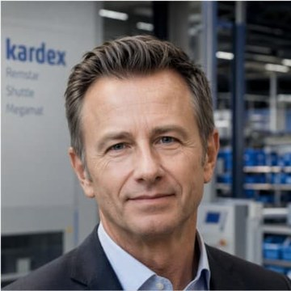
Wie sich das Lager zum Wettbewerbsvorteil ausbauen lässt – in Handel, Großhandel und E-Commerce
Peter Wilfinger, MSc MBA — Geschäftsführer Kardex Austria GmbH (seit Oktober 2017), Österreich und Rumänien
Wer:
- Kardex: Schweizer Intralogistik-Konzern (vertikale Lift- und Paternoster-Lager, AutoStore-Partner), Österreich-Sitz Wien-Donaustadt, neuer Standort Graz-Raaba; 2024 HERMES.Wirtschafts.Preis-Nominierung.
- Wilfinger: seit Juli 2017 Director New Business bei Kardex, davor Vertrieb/Projekte Intralogistik.
Zu erwarten:
- Verkaufsvortrag mit Kundenbeispielen: Platzersparnis, Pickleistung, Ergonomie („Ware zur Person“), Fachkräftemangel als Kaufargument.
Für dich: „Ware zur Person“ ist wörtlich deine These: Die Maschine richtet sich zum ersten Mal nach dem Menschen — kannst du ihm als Vorlage schenken.
Links: Factory: Wilfinger übernimmt Kardex Remstar · Kardex Standort Graz
SPAR-Warenwirtschaft am Beispiel der Wein-Logistik – Wie Bestände, Prozesse und Verfügbarkeit entlang der Lieferkette gesteuert werden
Daniel Stojoski (Website) bzw. Prok. Franz Zagler, Leiter Logistik und Warenfluss (Mail, Podium) — SPAR Österreichische Warenhandels-AG
Wer:
- SPAR-Logistik: Zentrallager Ebergassing (NÖ) mit KNAPP-Technik — zwei automatische Hochregallager, frei navigierende Shuttles, gemeinsam entwickelte Palettenkommissionierung „Pick-it-Easy Move“ (ergonomisch, halbautomatisch); Wels als zweites Zentrallager; größter privater Arbeitgeber Österreichs.
- Wein: Bestandssteuerung von Jahrgängen und Verfügbarkeit in Filialen — ein Warenwirtschafts-Vortrag, kein Roboter-Vortrag.
Zu erwarten:
- Prozessvortrag: Bestände, Prognosen, Verfügbarkeit — KI als Nachfrageprognose.
Für dich: Ebergassing ist das beste österreichische Beispiel für „Mensch + Maschine“: Der Roboter hebt, der Mensch entscheidet — KNAPP nennt es ergonomisch, nicht vollautomatisch. Namen im Saal prüfen (Stojoski oder Zagler).
Links: KNAPP Case Study SPAR Ebergassing · LOGISTIK express: KNAPP/SPAR
Erfolgreiche Handelsstrategien entstehen hinter den Kulissen
Stefan Krenn — KNAPP AG / KNAPP Systemintegration GmbH (Lebensmittel- und Leergutlogistik, Leoben)
Wer:
- KNAPP: Hart bei Graz, Geschäftsjahr 2025/26 Umsatz 2,135 Mrd € (+7,6 %), Auftragseingang 2,51 Mrd €, rund 9.000 Mitarbeitende (4.600 in Österreich), 106 Mio € F&E; Pick-it-Easy Robot (KI-Kommissionierroboter), OSR-Shuttles; Kunden SPAR, Zalando, Apotheken, Pharma.
- KSI: Tochter für Lebensmittelhandel und Leergut — SPAR, Rewe, Lidl.
Zu erwarten:
- „Hinter den Kulissen“: Die Filiale ist nur so gut wie das Lager dahinter; Automatisierung als Ermöglicher von Sortiment und Verfügbarkeit.
Deine Reibung: Kieninger, Wilfinger und Krenn verkaufen Automatisierung als Antwort auf Fachkräftemangel. Keine Reibung — du bist ihr Vorredner, der die Angst vor ihren Produkten abbaut. Deine Fails sind Chatbots, Autos und Vollersatz-Ankündigungen, nicht Shuttles.
Stage line: „Alle, die nach mir sprechen, verkaufen Ihnen Roboter. Ich sage Ihnen, warum Sie sie trotzdem brauchen — und wofür Sie die Menschen dann noch brauchen.“
Für dich: Der Weltmarktführer sitzt im Saal. Dein Robotik-Sockel (erster Knickarmroboter 1986, Tesla Fremont 2014, Magna 2026) macht dich zum Kollegen, nicht zum Kritiker. Pick-it-Easy Robot als Erfolgsbeispiel nennen.
Links: KNAPP Bilanz 2025/26 · Pick-it-Easy Robot · KSI
Wichtigkeit der Logistik – Ihr Logistiknetzwerk (Königsdisziplin Logistik)
Wolfgang Kubesch — Geschäftsführer BVL Bundesvereinigung Logistik Österreich (seit 1. Juni 2012)
Wer:
- Netzwerker: BVL Österreich ist das größte Logistik-Netzwerk des Landes (Logistik-Dialog, Logistik-Preis); Kubesch kommt aus der Industrie (Semperit), seit 14 Jahren Gesicht des Verbands.
- Industriemagazin 24.02.2026: „Wir brauchen ein Mindset, dass es wieder vorangeht“ — Logistik „insgesamt sehr robust“, Lager eher voll, E-Commerce-Umschlag langsamer, Zölle bremsen; Forderungen: Infrastruktur, Fachkräfte, Bürokratieabbau.
Zu erwarten:
- Verbandsrede: Bedeutung der Branche (Logistikanbieter erwirtschaften 33,6 Mrd € direkt), Mitgliederwerbung, Mindset.
Deine Reibung: Sein „Mindset, dass es wieder vorangeht“ ist dein Optimismus in Verbandssprache. Er schließt den Tag, du eröffnest ihn — dieselbe Klammer.
Stage line: „Wolfgang Kubesch wird Ihnen um 16 Uhr sagen, dass wir ein Mindset brauchen, dass es wieder vorangeht. Ich fange damit jetzt an.“
Was das Programm dir überlässt
- Niemand außer dir spricht über Menschen, Arbeit, Angst, Sinn — alle über Systeme, Märkte, Prozesse. Das ist die Lücke.
- Roboter kommen bei sechs von elf Vorträgen vor (Kieninger, Wilfinger, Krenn, Füll, Fiege, SPAR) — deshalb keine Roboter-Grundlagen, sondern die Frage „wer arbeitet mit ihnen?“.
- Fails bringt keiner — Anbieter zeigen Referenzen. Deine Fails deshalb: Chatbots, Autos, „Menschen-ersetzen“-Rückzieher, nicht das Lager-Shuttle des Nachredners.
- Abweichung: Website nennt für SPAR Daniel Stojoski, Mail und Podiumsliste Franz Zagler — beide vorbereitet. Quellen: Programmseite und Teilnehmer-Mail (10.09.), Artikel (11.09.), eigene Recherche (Handelsverband, Wikipedia, retail.at, Industriemagazin, Logistik Heute, LinkedIn-Snippets).
2🎯Rahmen — wer zuhört und wie
Warum „Mensch und Maschine“ auf eine Logistikkonferenz gehört: Die Logistik ist die Branche deiner These. Kommissionieren im Kühlhaus, Nachtschicht im Paketzentrum, Lkw-Fernfahrt, Container ausräumen bei 40 Grad — nirgends gibt es mehr „unmenschliche Arbeit“, nirgends fehlen mehr Menschen (8.000 Lkw-Fahrer in Österreich, 500.000 in der EU, 36 % über 55) und nirgends stehen mehr Roboter (Amazon 1 Mio; KNAPP, Kardex, Element Logic sitzen im Saal). Deine Frage „Was bleibt vom Menschen, wenn das Unmenschliche wegdigitalisiert ist?“ ist hier die Personalplanung 2027.
Warum Jaklitsch dich gebucht hat: Zehn Vorträge zeigen Systeme, Märkte, China, Lager — das „Wie“. Du eröffnest mit dem „Warum“: Die Roboter nehmen niemandem den Job weg, sie besetzen Stellen, für die sich niemand mehr bewirbt. Sein Artikel sagt es selbst: Gedankenexperimente, der Mensch im Mittelpunkt. Du bist der Vorredner, der die Angst vor den Produkten der Nachredner abbaut.
Stage line: „Die Logistik ist die Branche, in der die unmenschliche Arbeit unserer Urgroßeltern am längsten überlebt hat — und die erste, in der sie jetzt verschwindet.“
Fünf Brücken: Einkaufswagen an der Kassa = Fließband 1913 (Ford musste den Lohn verdoppeln) · Lkw-Fahrer mit Navi = Automation Bias (Waymo am Schulbus) · Klarna/DPD = die Maschine allein scheitert · Ebergassing, Post-Robin, Vulcan, Digit = das Team funktioniert · Lidl/Einride seit Montag = aus einem Fahrer werden drei Operatoren. Weglassen: Roboter-Grundlagen (kennen alle), Onlinehandels-Zahlen (macht Will nach dir), Technik-Urteile über Shuttles und AutoStore (sitzen im Saal).
Format: Nachmittagskonferenz mit Podiumsdiskussion, ein Raum, elf Vorträge à 15 Minuten, drei Kaffeepausen. Du eröffnest direkt nach der Begrüßung — Publikum ist frisch, hat Mittag gegessen, will Bilder. 15 Minuten sind 15 Minuten: Jaklitsch schreibt „13:00 – 13:15 (+/-)“, nach dir kommen drei weitere 15-Minuten-Slots vor der ersten Pause.
Wer im Saal sitzt (Anmeldeliste laut Mail Jaklitsch 10.09.): Arvato Austria, Bauer Communications, bp4b Personaldienstleistung, BVL Österreich, CTP Invest Austria, DEICHMANN, Deutsche Handelskammer Österreich, DHL Express Austria, DHL Global Forwarding Austria, Element Logic, EMA GmbH, Fiege Austria, Fraunhofer Austria Research, GREGORI Consulting, Handelsverband, Hörmann Intralogistics, Horvath Verlag, IBL Consulting, idealo, IDIH – Institut des Interaktiven Handels, Kardex Austria, KNAPP AG, Kühne + Nagel, Logistic Natives, Max Impact, moxx.advertising, niceshops, Raiffeisen Ware Austria, Rajapack, Scheele, Schmalz GmbH, SPAR AG, Umwelt Journal, WeJobbr, Wolt, WU Wien, Zehnder.
Drei Publikumstypen:
- Intralogistik-Anbieter (KNAPP, Kardex, Element Logic, Hörmann, Schmalz): verkaufen Automatisierung, kennen jede Roboter-Zahl, hören Fails über ihre Branche kritisch — Fails deshalb an Chatbots, Autos und „Menschen ersetzen“ festmachen, nicht am Lager-Shuttle.
- Händler und Dienstleister (SPAR, Deichmann, niceshops, Fiege, DHL, Arvato, Wolt): Fachkräftemangel, Retouren, Temu-Druck, Margen — deine These „Stellen besetzen, für die es keine Menschen mehr gibt“ ist ihr Alltag.
- Verbände, Medien, Wissenschaft (Handelsverband, BVL, Fraunhofer, WU, IDIH, Umwelt Journal): wollen die große Klammer — Urgroßeltern, Fließband, was Arbeit ist.
Was der Veranstalter versprochen hat (Artikel 11.09.): „Er holt sein Publikum dort ab, wo es gerade steht, und stellt den Menschen … in den Mittelpunkt einer lebenswerten digitalen Zukunft. Seine spannenden Gedankenexperimente eröffnen neue Perspektiven … Gedankenspiele sind das Trainingslager für eine gelungene Zukunft.“ Also: Gedankenexperimente, Humor, der Mensch im Mittelpunkt — kein Tool-Vortrag.
Ton: Deutsch, österreichisches Publikum, Wiener Nachmittag. Provokant-optimistisch (Grundton laut Talk-Datenbank). Zahlen aus Österreich zuerst (8.000 Lkw-Fahrer, 12,3 Mrd Online-Umsatz, SPAR Ebergassing, Post Robin), dann die Welt (Amazon, Klarna, Ocado).
Briefing: 10.09.2026, 15:00, Zoom (Jaklitsch, Zednik) — kein Transkript im Ordner. Vereinbart laut Programm: Titel „Mensch und Maschine – ein unschlagbares Team“, Slot 13:00.
3🎤Die Keynote, wie sie vereinbart ist
Titel (Programm, Mail 10.09., Artikel 11.09.): Mensch und Maschine – ein unschlagbares Team
Untertitel (Talk-Datenbank): Wie die Zusammenarbeit mit kognitiven Robotern und KI der Arbeit ihre Menschlichkeit zurückgibt.
Kurztext (talks.christophholz.com): Unsere Urgroßeltern haben unmenschliche Arbeit in den Fabriken der industriellen Revolution geleistet — weil es noch keine Automatisierung, keine Roboter, keine KI gab. Diese Arbeit war nie für Menschen gemacht. Wenn alles Unmenschliche wegdigitalisiert ist, bleibt das, was uns ausmacht — der Mensch. Und wer glaubt, KI oder Roboter machen arbeitslos, hat bloß nicht verstanden, was Arbeit eigentlich ist.
Anmoderation (Talk-Datenbank, für Jaklitsch): Klar: Informationstechnik hat Auswirkungen auf die Zukunft der Arbeit. Aber welche eigentlich? Prognosen scheitern an der Komplexität der Wirklichkeit. Gedankenspiele sind anders. Sie spielen mit dem Möglichen. Was wäre wenn? Und warum eigentlich nicht? Mit Christoph Holz — dem Digital-Ethiker, TV-Experten und Raumfahrttechniker — betrachten wir die großen Herausforderungen der Menschheit aus der Perspektive der Zukunft. Und noch etwas: Zukunft ist viel zu ernst, um darüber nicht auch mal zu lachen. Viel Spaß!
Hauptthese: Unsere Urgroßeltern leisteten in den Fabriken der industriellen Revolution unmenschliche Arbeit — nicht aus Bosheit, sondern weil es Automatisierung, Roboter und KI noch nicht gab. Diese Arbeit war nie für Menschen gemacht. Wenn Künstliche Intelligenz das Unmenschliche übernimmt, bleibt das übrig, was uns ausmacht. KI macht nicht arbeitslos, sondern gibt der Arbeit ihre Menschlichkeit zurück — Mensch und Maschine werden zum unschlagbaren Team, sobald jeder das tut, wofür er gemacht ist.
Fünf Gedankenexperimente (Talk-Datenbank):
- Arbeit, die nie für Menschen war. Wenn die KI genau diese Arbeit übernimmt — befreit sie uns, oder nimmt sie uns etwas, das wir vermissen werden?
- Macht KI arbeitslos? Geht uns die Arbeit wirklich aus — oder nur die unmenschliche?
- Das unschlagbare Team. Wo verläuft die Grenze, und wer entscheidet, was der Mensch behalten will?
- Was übrig bleibt. Empathie, Kreativität, Verantwortung — reicht das für ein erfülltes Arbeitsleben?
- Sinn statt Stunden. Wenn die Maschine die Stunden übernimmt — wofür arbeiten wir dann: für Geld, für Sinn oder füreinander?
Pflicht-Sockel (Kompetenzen): Lehrauftrag Digitale Ethik FH OÖ Steyr · Dipl.-Informatiker TU München · Raumfahrt-Nebenfach (Rocket Scientist) · TV-Experte (RTL, Sat.1, n-tv, ServusTV). Talk-spezifisch: erster Industrie-Knickarmroboter 1986 · Tesla Fremont 2014 · Magna Heavy Stamping 2025 und Magna Steyr 2026 · Zukunftsreise Kognitive Robotik Zürich–Stuttgart 06/2026 · Zukunftsreise Korea/Japan „Next-Gen Robotics“ 29.11.–04.12.2026 (WKO, gebucht).
Aphorismen zum Talk (content.talk_aph, aktiv):
- „Es geht nicht darum, Menschen zu ersetzen, sondern Stellen zu besetzen, für die es keine Menschen mehr gibt.“
- „Wenn alle unmenschliche Arbeit weg-digitalisiert wird, ist das, was bleibt, der Mensch.“
- „Wer glaubt, dass die KI oder die Roboter uns die Arbeit wegnehmen, hat offensichtlich selber nie richtig gearbeitet.“
- „Das beste Team der Zukunft ist gemischt: ein Mensch, ein Agent — und keiner tut, was der andere besser kann.“
- „Künstliche Intelligenz ersetzt das Handwerk nicht — sie befreit es.“
- „Je klüger man ist, desto weniger profitiert man von KI. KI demokratisiert Intelligenz.“
- „KI pulverisiert die Transaktionskosten, also Größenvorteile. Die Zukunft gehört den kleinen und mittleren Firmen.“
4⏱️15 Minuten — Dramaturgie-Vorschlag
- 0–1 Kaltstart — Einkaufswagen: „Gedankenexperiment: Sie stehen mit dem Einkaufswagen an der Kassa. Was kommt als erstes aufs Band?“ (Antwort aus dem Saal; die Banane, die Bierkiste …) — „Das Band ist das Fließband unserer Urgroßeltern. Es hat sich in 110 Jahren nicht nach uns gerichtet. Heute kippt das zum ersten Mal.“
- 1–3 These: Urgroßeltern, unmenschliche Arbeit, nie für Menschen gemacht. „Wer glaubt, KI macht arbeitslos, hat nicht verstanden, was Arbeit ist.“ Handzeichen: Wer hat im Lager, am Lkw, in der Filiale offene Stellen? (Fast alle.)
- 3–6 Fails — die Maschine allein: Klarna (700 Leute durch KI ersetzt, dann „we went too far“, wieder Menschen), DPD-Chatbot (schimpft die eigene Firma, dichtet ein Haiku), Chevy-Händler (Tahoe für 1 Dollar, „no takesies backsies“). Pointe: Nicht die KI hat versagt, sondern die Idee, sie allein zu lassen.
- 6–10 Team — Mensch + Maschine: Schach (Mensch + Rechner schlägt Rechner → Titel). Dawn-Café Tokio: Frau mit MS steuert vom Bett aus einen Roboter, 20 Menschen neu in Arbeit. Amazon Vulcan (erster Roboter mit Tastsinn, Hamburg) und Digit (100.000 Behälter bei GXO) — und daneben: Amazon plant 25.000 neue Stellen in Europa. SPAR Ebergassing/KNAPP: „ergonomische“ Kommissionierung — der Roboter hebt, der Mensch entscheidet.
- 10–12 Die Zahl, die alles dreht: Österreich fehlen 8.000 Lkw-Fahrer, Europa 500.000, 36 % sind über 55, 3 % unter 25. Lidl fährt seit Montag (15.09.) mit Einride ohne Fahrer eine Filiale an. „Wir können nur hoffen, dass die KI rechtzeitig kommt, bevor die Logistik zusammenbricht.“ — „Es geht nicht darum, Menschen zu ersetzen, sondern Stellen zu besetzen, für die es keine Menschen mehr gibt.“
- 12–14 Beifahrersitz — Verantwortung bleibt: Lkw-Fahrer, dessen Navi 10.000 Mal recht hatte, und beim 10.001. Mal sein kritisches Denken auf dem Beifahrersitz sitzt. Waymo-Rückruf wegen Schulbussen: Die Maschine kann rechnen, Verantwortung kann sie nicht tragen. Das bleibt beim Menschen — und das ist keine Schwäche, das ist der Job.
- 14–15 Schluss: „Wenn alle unmenschliche Arbeit wegdigitalisiert ist, bleibt das, was übrig ist: der Mensch. Mensch und Maschine — ein unschlagbares Team. Wer versteht wie, gewinnt.“ Brücke zu Rainer Will: „Und wie viel von dem Team in Paketen steckt, zeigt Ihnen jetzt Rainer Will.“
Zeitbudget: 15 Minuten = etwa 1.900 Wörter gesprochen. Sieben Bilder reichen: Einkaufswagen, Fließband 1913, Klarna-Headline, DPD-Haiku, Vulcan/Digit, Lkw-Fahrer-Zahl, Lidl/Einride.
5📖Begriffe — Definitionen für die Bühne
| Begriff | Bühnendefinition | Woher / Hinweis |
|---|---|---|
| Unmenschliche Arbeit | Arbeit, die sich nach dem Takt der Maschine richtet: Fließband, Schicht, Akkord, Nachtschicht im Lager. Nicht „schlechte“ Arbeit — Arbeit, die nie für einen Menschen gemacht war. | Kernbegriff des Talks; Beispiele aus dem Saal: Kommissionieren im Kühlhaus, Lkw-Nachtfahrt, Paketsortierung. |
| Kognitiver Roboter | Roboter mit eingebauter KI: sieht, hört, versteht Sprache, lernt aus jedem Griff. Der Unterschied zum Industrieroboter von 1986: Er braucht keinen Käfig und kein Programm für jeden Handgriff. | Christophs Begriff (Ellmau 06/2026: „ein kognitiver Roboter, das heißt er hat eine KI verbaut“); Beispiele: Vulcan, Digit, Pick-it-Easy Robot, Post-Roboter Robin. |
| Team Mensch + Maschine | Jeder tut, wofür er gemacht ist: die Maschine das Wiederholbare, Schwere, Gefährliche; der Mensch das Unerwartete, die Beziehung, die Verantwortung. | Schach-Beleg: Advanced Chess (Kasparow 1998), Freestyle-Turnier 2005: Amateure + PC schlugen Großmeister und Supercomputer. |
| Automation Bias / Beifahrersitz | Nach 10.000 richtigen Empfehlungen setzt der Mensch sein kritisches Denken auf den Beifahrersitz. Der Fehler ist nicht die Maschine, sondern das Vertrauen ohne Prüfung. | Lkw-Fahrer-Bild (Weinviertel, Ellmau, Post); Fachbegriff „automation bias“ (Parasuraman/Riley 1997). |
| Jevons-Paradox | Wird etwas billiger, wird mehr davon gebraucht: billigere Kommissionierung → mehr Pakete → mehr Lager → mehr Leute. Amazon: 1 Mio Roboter und gleichzeitig 1,5 Mio Beschäftigte. | Jevons 1865 (Kohle). Vorsicht: gilt nur bei elastischer Nachfrage — Paketflut ja, Anwaltsstunden ja, Kassierer nein. |
| Elastische Nachfrage | Nachfrage, die auf den Preis reagiert: Wird es billiger, wird deutlich mehr gekauft (Preiselastizität über 1). Unelastisch: Man braucht davon eine feste Menge, egal was es kostet — ein Kassiervorgang pro Einkauf, ein Brot pro Tag. | Bühnenfassung: „Wenn der Versand halb so viel kostet, bestellen die Leute doppelt so oft. Wenn die Kassa halb so viel kostet, kaufen sie nicht doppelt so oft ein.“ Deshalb schafft Automatisierung im Lager Arbeit (elastisch) und an der Kassa nicht (unelastisch). Beispiele elastisch: Pakete, Same-Day, Retouren, Flüge, Rechtsberatung; unelastisch: Kassieren, Strom, Medikamente. |
| Fachkräftemangel ≠ Arbeitslosigkeit | Arbeitslosigkeit entsteht, wenn Arbeit fehlt. Fachkräftemangel entsteht, wenn Menschen fehlen. Die Logistik hat das zweite Problem — also ist Automatisierung Ersatz für fehlende Menschen, nicht für vorhandene. | 8.000 Lkw-Fahrer AT, 500.000 EU (WKÖ/IRU); Kubesch: „Fachkräfte“ als Kernforderung. |
| Agentic Commerce | KI-Agenten, die für den Kunden suchen, vergleichen und bestellen. Handelsverband-Thema 2026. Frage für die Bühne: Wer haftet, wenn der Agent kauft? | Handelskolloquium 26.03.2026; Preisvergleich (idealo) ist die Urform. |
| Gedankenexperiment / Gedankenspiel | Keine Vorhersage, sondern ein Spiel mit dem Möglichen: Was wäre wenn? Und warum eigentlich nicht? | Signature: „Gedankenspiele als Trainingslager für eine gelungene Zukunft“ (nie „Gedankenexperimente als Trainingslager“). |
6📈Jevons in der Logistik — mehr Roboter, mehr Arbeit
Der Befund: Amazon hat im Juli 2025 den millionsten Roboter in Betrieb genommen; 75 % aller Lieferungen sind roboterunterstützt. Gleichzeitig beschäftigt Amazon rund 1,5 Millionen Menschen und kündigt für Europa 25.000 zusätzliche Stellen an (Investition über 10 Mrd €). Die Roboterzahl hat sich seit 2019 verfünffacht, die Belegschaft ist nicht geschrumpft — sie hat sich verschoben: weg vom Heben, hin zu Wartung, Steuerung, Ausnahmen.
Wo Jevons trägt: Paketmenge (Österreich: Online-Umsatz +3 % auf 12,3 Mrd €, EU: 4,6 Mrd Kleinpakete im Jahr, 91 % aus China), Retouren, Same-Day — die Nachfrage ist elastisch, billigere Logistik erzeugt mehr Logistik. Starship: 10 Mio Roboterlieferungen, Flotte von 3.000 auf 12.000 bis 2027 — und trotzdem mehr Kuriere als je zuvor.
Wo Jevons nicht trägt: Kassieren (Just Walk Out), Standard-Kundenanfragen (Klarna: Volumen bleibt, Menschen kommen zurück wegen Qualität, nicht wegen Menge), Lkw-Fahren — hier fehlen die Menschen ohnehin (8.000 in AT), die Maschine ersetzt niemanden, sie besetzt.
Gegenbeleg, den du kennen musst: New York Times 21.10.2025: interne Amazon-Dokumente — bis 2033 sollen 600.000 Stellen nicht geschaffen werden, die sonst nötig wären (160.000 bis 2027, 12,6 Mrd $ Einsparung 2025–27, 75 % der Abläufe automatisiert). Das ist kein Abbau, sondern vermiedene Neueinstellung — bei einer Bevölkerung, die 2033 diese Leute nicht mehr hat. Amazon dementierte die Deutung „Ersatz“, nicht die Dokumente.
Stage line: „Amazon hat eine Million Roboter — und sucht in Europa 25.000 Leute. Die Roboter nehmen niemandem den Job weg. Sie nehmen den Jobs das weg, wofür sich niemand mehr bewirbt.“
techcrunch.com 01.07.2025 · cnbc.com 02.07.2025 · aboutamazon.com (Vulcan, 07.05.2025) · industriemagazin.at (Amazon Europa) · forbes.at / netzwoche.ch 24.10.2025 (NYT-Dokumente) · handelsverband.at (E-Commerce-Studie 2026) · wallstreet-online.de 12.01.2026 (Starship)
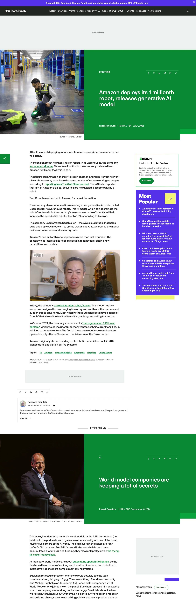
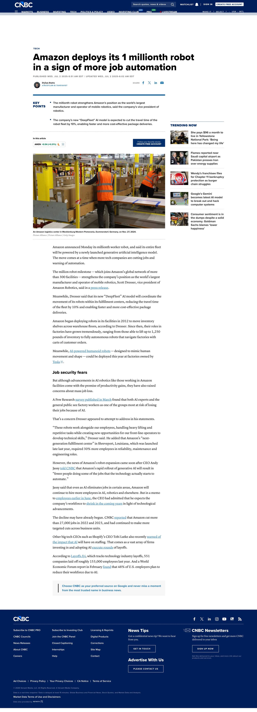
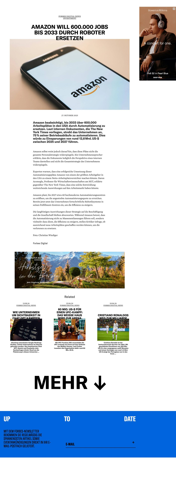
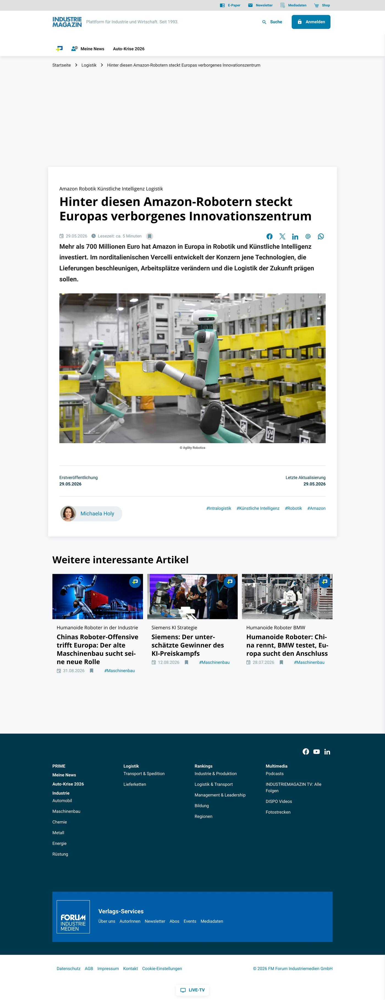
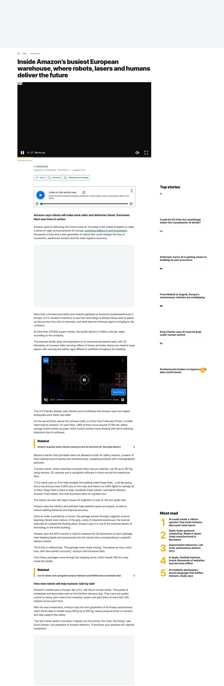
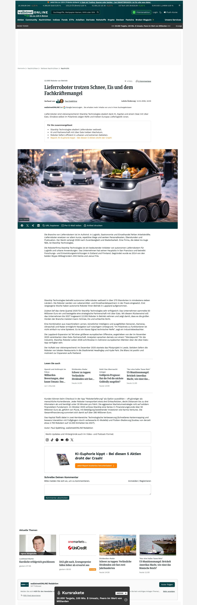
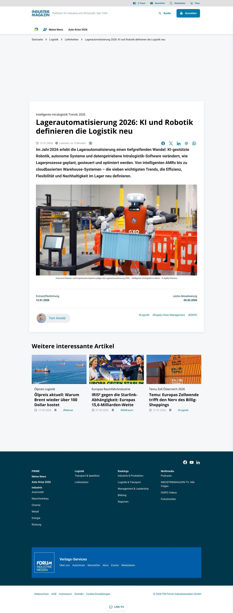
7🧱Bausteine aus den Transkripten
Aus 2026 Vortrag Transcript/: BMI Post (07.07.2026), Magna Heavy Stamping (10.10.2025), Weinviertler Wirtschaftsgespräche (28.04.2026), Volksbank Ellmau (22.06.2026), S-Leasing Mondsee (28.03.2025), SCC (16.01.2026). Transkriptfehler (z. B. „besenkter“ = „besengter“) sind belassen; jedes Zitat einzeln, nichts verschmolzen.
Die Klammer: unmenschliche Arbeit
- „Unsere Urgroßeltern, die haben unmenschliche Arbeit verrichtet in den Fabriken der Industriellen Revolution.“ … „Wenn alle unmenschliche Arbeit wegdigitalisiert ist, ist das, was übrig bleibt, der Mensch.“ — BMI Post 07/2026
- „Gedankenexperiment, du stehst mit dem Einkaufswagen vor der Kasse, was kommt als erstes aufs Fließband?“ — „Die Banane oder nicht die Banane, wann kommt die Banane aufs Fließband?“ — BMI Post 07/2026; Magna 10/2025
- „Also KI-getriebene Arbeitslosigkeit war immer schon ein Denkfehler.“ … „Ihr verwendet es, Amazon, die Großen auch, das geben die bloß nicht zu.“ — BMI Post 07/2026
- „Und das ist auch der versteckte Grund, warum künstliche Intelligenz keine Arbeitslosigkeit macht, künstliche Intelligenz macht Arbeit.“ — Weinviertel 04/2026
- „Es ist nicht nur so, dass künstliche Intelligenz die Arbeitslosigkeit nicht erhöht, sondern sie senkt die Arbeitslosigkeit, bringt neue Menschen in Arbeit, die bisher ausgeschlossen waren vom Arbeitsprozess.“ — Ellmau 06/2026
Das Team: Schach, Pflug, Zwinge
- „Das Team von guten Schachspielern und einem Schachcomputer kann einen anderen Schachcomputer schlagen.“ … „Mensch und Maschine, da kommt der Titel her, sind ein unschlagbares Team.“ — Magna 10/2025
- „Es braucht immer noch die menschliche Komponente und deswegen ist nichts stärker als das Team als Mensch und Maschine. Seit wir den Pflug erfunden haben, seit wir den Hammer erfunden haben, das ist immer Teamarbeit.“ — Weinviertel 04/2026
- „Man kann diesen Robotern in Zukunft einfach mit denen verbal kommunizieren, reicht mir bitte mal die 23er-Zwinge oder was auch immer.“ … „Das hier schaut total harmlos aus, aber das ist der Fertigungsroboter der Zukunft.“ — Magna 10/2025
- „Der Roboter, das ist so etwas wie der Akkubohrer der Zukunft, den hat man dann einfach so, wie man einen Akkubohrer hat.“ — Weinviertel 04/2026 (Transkript: „Akkubauer“)
- „In zehn Jahren ist es ganz normal in unserem Stadtbild, dass solche Roboter für uns einkaufen gehen beispielsweise.“ — Ellmau 06/2026
Fachkräfte: die Zahl, die dreht
- „Von den Busfahrern ungefähr 10.000 LKW-Fahrer fehlen in Österreich. Wir können nur hoffen, dass die künstliche Intelligenz rechtzeitig kommt, bevor unsere Logistik, bevor unsere Verkehrsinfrastruktur, bevor der öffentliche Verkehr zusammenbricht.“ Belegt: WKÖ „bis zu 8.000“ Lkw-Fahrer (2025), EU rund 500.000 — die 10.000 auf 8.000 korrigieren. — BMI Post 07/2026
- „Erstens fehlen 150.000 Lkw-Fahrer, also von wegen digitale Arbeitslosigkeit, so ein Blödsinn … Die sind im Durchschnittsalter 55 und wer möchte gern Lkw-Fahrer werden?“ (150.000 = DACH-Größenordnung; belegt für die EU: 500.000, 36 % über 55.) — Magna 10/2025
- „Wir haben nämlich im öffentlichen Verkehr, im deutschsprachigen Raum ungefähr 200.000 Busfahrer zu wenig, Lokführer zu wenig …“ — Weinviertel 04/2026
- „Also bevor ich auf meine Pizza verzichten muss, lasse ich mich lieber von einem Roboter bedienen, oder nicht?“ — Weinviertel 04/2026; Ellmau 06/2026
Dawn-Café: Roboter bringen Menschen in Arbeit
- „Die Person rechts, die diesen Roboter steuert, liegt mit Multiple Sklerose zu Hause im Bett. … Und diese Roboter, da gibt es dann 20 Mitarbeiter, die auf diese Weise neu in Arbeit kommen. Natürlich könnten diese Roboter auch so durch die Stadt fahren, aber wer würde mit ihnen reden?“ — BMI Post 07/2026
- „Da sind dann immer drei Menschen, die eben nicht mehr an der Arbeitswelt normalerweise teilnehmen können, die haben dann gemeinsam Dienst und dann treffen sich hinten, hinter der Theke, die Roboter dann, wenn sie nichts zu tun haben, ein bisschen zu plauschen.“ — Weinviertel 04/2026
Beifahrersitz: Verantwortung bleibt
- „Ein KI-gesteuertes Navi funktioniert 10.000 Mal und dann setzt er irgendwann seinen kritischen Geist, sein kritisches Denken auf den Beifahrersitz.“ — BMI Post 07/2026
- „Dieser Lkw-Fahrer, sein Navi hat 10.000 Mal funktioniert, das ist bestimmt ein guter Fahrer. Aber nach 10.000 Mal … hat er sein kritisches Denken auf den Beifahrersitz gesetzt.“ — Weinviertel 04/2026
- „Wenn der Tesla jemanden überfährt, soll er dann zur Strafe drei Wochen draußen halten?“ … „Verantwortung ist für manche eine Zumutung, aber ich glaube nicht für die Menschen hier im Raum.“ — SCC 01/2026
- „Und dann wird die Ampel grün und dieses Auto rast wie ein besengter Taxifahrer durch die Stadt.“ … „nach ein paar Minuten denkt man sich überhaupt nichts mehr und sagt, warum habe ich eigentlich immer einen Taxifahrer gebraucht?“ — Weinviertel 04/2026; Magna 10/2025 (Waymo)
Dezentrale Logistik: Paletten statt Sattelzüge
- „Wir haben jetzt riesige Zentralverladestellen, da geht es von Amsterdam irgendwo nach Deutschland und da wird es umgeladen zwischen den LKWs wieder, von Leuten, die wir eh nicht haben.“ … „Wäre es nicht eigentlich viel praktischer, die Paletten einzeln … zu liefern, immer dann, wenn ich sie brauche?“ — S-Leasing Mondsee 03/2025
- „In Zukunft kommen die Amazon-Packerl oder die Lieferung auf die Baustelle … weil ja eh keine Fahrer gibt und weil ja Elektroautos nur ein Zehntel von den Kosten, was ein Verbrenner kostet, die liefern wir das einfach direkt hin.“ — Ellmau 06/2026
- „Wer interessiert sich für die Frage der dezentralen Logistik, wenn also in Zukunft ich nicht mehr warten muss auf die Lieferung, sondern sich diese selber erledigt?“ — Weinviertel 04/2026 (Themenwahl im Saal)
- „Dann stehen plötzlich ein paar hunderttausend Autos auf Lager, weil ein einziger Chip fehlt. Und klar, diese Chip-Fabriken, die brauchen einmal fürs Umrüsten 18 Monate.“ — Magna 10/2025 (Lieferkette)
Was nicht automatisierbar ist
- „Wenn ihr Ideen habt, wenn ihr Beziehungen aufbaut, wenn ihr Empathie zeigt — dann ist ein Roboter, eine KI … ein Psychopath.“ … „Sinnstiftende Arbeit ist das, was zwischen den Tasks stattfindet.“ … „Das heißt, im Endeffekt, ich glaube, wir werden nicht arbeitslos.“ — SCC 01/2026
- „Die bösartige KI, wenn sie uns ausrotten will, schickt für uns keine Kampfroboter.“ (Pointe: sie braucht uns — als Hände.) — SCC 01/2026
8🏛️Vorläufer — dieselben Versprechen, ältere Technik
| Jahr | Was | Versprechen / Angst damals | Was tatsächlich geschah |
|---|---|---|---|
| 1913 | Fließband bei Ford, Highland Park | Montagezeit eines Model T von 12,5 auf 1,5 Stunden; Angst vor Entmenschlichung (Chaplin, Modern Times 1936) | Ford verdoppelte 1914 den Lohn auf 5 $/Tag, weil die Fluktuation bei 370 % lag: Die unmenschliche Arbeit musste teuer erkauft werden — dein Kernbild. |
| 1956 | Container (Malcom McLean, Ideal-X) | Hafenarbeiter befürchteten das Ende ihres Berufs | Der Beruf des Schauermanns verschwand; der Welthandel verzehnfachte sich; die Hafenlogistik beschäftigt heute mehr Menschen als 1956 — Jevons. |
| 1974 | Barcode (erster Scan: Wrigley’s-Kaugummi, Troy/Ohio) | Kassierer überflüssig | Kassierer blieben 50 Jahre; erst „Just Walk Out“ (2018) versuchte den Ersatz — und wurde 2024 zurückgenommen. |
| 2012 | Amazon kauft Kiva Systems für 775 Mio $ | „Roboter ersetzen Lagerarbeiter“ | Von 200.000 (2019) auf 1.000.000 Roboter (2025) bei gleichzeitig wachsender Belegschaft. |
| 2013 | Frey/Osborne, Oxford: 47 % der US-Jobs automatisierbar | Massenarbeitslosigkeit binnen 10–20 Jahren | 2026: Rekordbeschäftigung, Fachkräftemangel in Logistik, Pflege, Handwerk. Die Studie hat Aufgaben gezählt, nicht Menschen. |
| 2013 | Amazon Prime Air (Bezos bei 60 Minutes): Drohnen „in vier bis fünf Jahren“ | Zusteller überflüssig | 2026: Drohnen in wenigen US-Regionen; Zusteller fehlen überall. |
| 2016 | Elon Musk: „Alien Dreadnought“ — die Model-3-Fabrik ohne Menschen | Vollautomatische Fabrik | April 2018: „Excessive automation at Tesla was a mistake. Humans are underrated.“ Förderbänder rausgerissen, Menschen zurück. |
| 2019/2021 | Ocado Andover / Erith — Roboterlager brennen | Das Lager der Zukunft braucht keine Menschen | Drei kollidierende Roboter, 100 Feuerwehrleute, 150.000 Bestellungen pro Woche gestrichen; danach: Sicherheitsredesign mit Menschen im Loop. |
| 2024 | Klarna: KI ersetzt 700 Servicemitarbeiter | „KI macht die Arbeit von 700“ | 2025/26: „We went too far“ — Menschen wieder eingestellt, weil Qualität einbrach. |
Stage line: „1913 hat Henry Ford den Lohn verdoppeln müssen, weil ihm die Leute vom Fließband davongelaufen sind. Die Arbeit war nie für Menschen gemacht. Wir haben 110 Jahre gebraucht, bis die Maschine das endlich selber macht.“
Ford: Wikipedia/History.com (Five-Dollar Day) · Container: Levinson, „The Box“ · Barcode: Smithsonian · Kiva: techcrunch.com 19.03.2012 · Frey/Osborne: oxfordmartin.ox.ac.uk · Prime Air: CBS 60 Minutes 01.12.2013 · Tesla: techcrunch.com 13.04.2018 · Ocado: thegrocer.co.uk 07/2021 · Klarna: customerexperiencedive.com
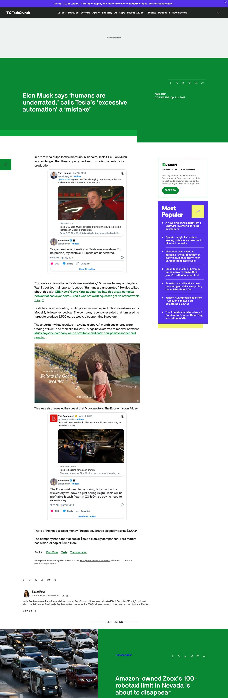
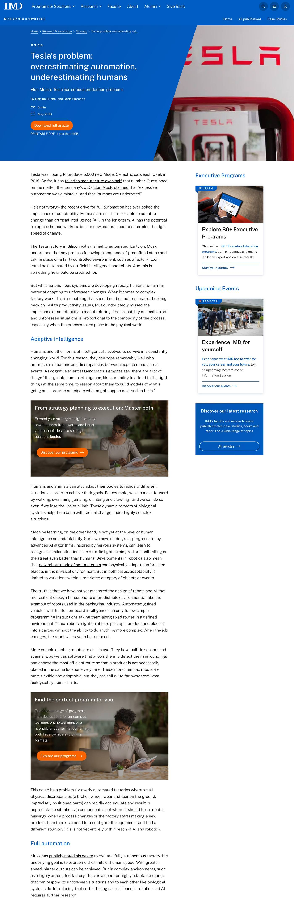
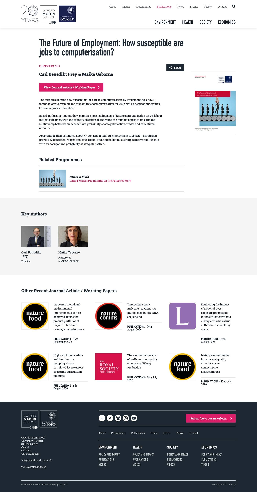
9🔢Zahlen, die tragen
| Zahl | Was | Quelle / Stand | Wofür |
|---|---|---|---|
| 8.000 | fehlende Lkw-Fahrer in Österreich; von 100.000 Fahrern gehen 20 % in zehn Jahren in Pension | WKÖ / nachrichten.at, verkehrsrundschau.de (2025) | Fachkräfte-Argument, statt „10.000“ |
| 500.000 · 36 % · 3 % | fehlende Lkw-Fahrer EU · Anteil über 55 · Anteil unter 25 | IRU / verkehrsrundschau.de | Demografie: Die Fahrer kommen nicht nach |
| 12,3 Mrd € | Online-Ausgaben Österreich 2026 (+3 %), davon 1,3 Mrd an chinesische Plattformen; Smartphone 5,4 Mrd (44 %) | Handelsverband E-Commerce-Studie, 22.06.2026 | Brücke zu Rainer Will |
| 4,6 Mrd · 91 % | Kleinpakete unter 150 € pro Jahr in die EU · Anteil aus China | EU-Kommission / futurezone.at, orf.at (2026) | Paketflut = Arbeit |
| 3 € · 2 € | EU-Pauschalzoll je Kleinsendung ab Juli 2026 · österreichische Paketsteuer je Paket ab Oktober 2026 (2,40 € brutto) | orf.at, heute.at, retail.at 21.07.2026 | Aktualität; Wills Thema |
| 1.000.000 | Roboter bei Amazon (Juli 2025); 75 % der Lieferungen roboterunterstützt; 200.000 waren es 2019 | aboutamazon.com, techcrunch.com 01.07.2025 | Jevons |
| 600.000 | Stellen, die Amazon bis 2033 laut internen Dokumenten durch Automatisierung nicht schaffen will (160.000 bis 2027; 12,6 Mrd $ Einsparung) | NYT 21.10.2025 via forbes.at, netzwoche.ch | Gegenposition, ehrlich nennen |
| 10 Mrd € · 25.000 | Amazon-Investition Europa · angekündigte neue Stellen | industriemagazin.at 2026 | Roboter + Menschen wachsen zusammen |
| 2× · 7,3 vs. 5,7 | Amazon-Rate schwerer Verletzungen 2024 gegenüber anderen Lagern · pro 100 Beschäftigte in automatisierten vs. nicht automatisierten Sortieranlagen (2021) | Strategic Organizing Center (Gewerkschaften), amazon-watchblog.de | Automatisierung heißt nicht automatisch weniger Belastung — Takt! |
| 700 → zurück | Klarna: Arbeit von 700 Servicekräften durch KI ersetzt (02/2024), dann wieder Menschen eingestellt („We went too far“) | customerexperiencedive.com, callcenterprofi.de | Fail 1 |
| 8.000 → nachbesetzt | IBM: rund 8.000 HR-Jobs automatisiert (2023), danach still nachbesetzt; 6 % der HR-Anfragen brauchen weiter Menschen | hrkatha.com, theweek.in 05/2025 | Rückzieher |
| 812 CAD | Air Canada muss zahlen, weil der Chatbot einen Trauer-Rabatt erfand — „the chatbot is part of the website“ | BC Civil Resolution Tribunal 02/2024, haufe.de | Verantwortung bleibt beim Unternehmen |
| 1 $ | Chevy Tahoe (76.000 $) — Händler-Chatbot: „That’s a deal, no takesies backsies“ | gmauthority.com 12/2023 | Lacher |
| 2 Brände · 150.000 | Ocado-Roboterlager Andover 2019 und Erith 2021 · Bestellungen pro Woche in Erith | thegrocer.co.uk, theregister.com | Roboter ohne Menschen |
| 3.000+ · 19 | Waymo-Fahrzeuge im Software-Rückruf · Schulbus-Vorfälle allein in Austin (Schuljahr 2025/26) | techcrunch.com, npr.org 12/2025 | Beifahrersitz |
| 14 · 27 % | Unfälle der Tesla-Robotaxi-Flotte in Austin seit Juni 2025 · Anteil der Checks ohne verfügbares Auto (Reuters 04/2026) | electrek.co, carscoops.com 08/2026 | Hype vs. Betrieb |
| 10 Mrd $ | GM in Cruise versenkt, Dezember 2024 eingestellt | cnbc.com, axios.com 10.12.2024 | Fail Fahrzeuge |
| 100.000 | Behälter, die der Humanoide Digit bei GXO bewegt hat (erster kommerzieller Humanoiden-Vertrag) | agilityrobotics.com 11/2025 | Erfolg |
| 1.000+ · 700/h | Stretch-Roboter, die DHL bei Boston Dynamics bestellt · Kartons pro Stunde beim Entladen | therobotreport.com | Erfolg: das Unmenschliche (Container ausräumen bei 40 °C) |
| 1.500/h | Pakete, die der Auflegeroboter „Robin“ im Post-Logistikzentrum Wien-Inzersdorf auflegt — lernt mit jedem Paket | technische-logistik.net | Österreich-Beispiel |
| 2,135 Mrd € · 9.000 | KNAPP Umsatz 2025/26 (+7,6 %) · Mitarbeitende (4.600 in AT) | logistik-heute.de | Weltmarktführer im Saal |
| 10 Mio · 12.000 | Starship-Roboterlieferungen · Flottenziel 2027 (heute ~3.000) | wallstreet-online.de 12.01.2026 | Letzte Meile |
| 440.000 Meilen | Aurora-Lkw fahrerlos in Texas/Sun Belt bis Juni 2026, zehn Routen | electrive.net, vdi-nachrichten.com | Fahrer fehlen — Lkw fährt allein |
| 15 Paletten · 3.000 | Lidl/Einride: fahrerloser E-Lkw seit 15.09.2026 in Edermünde, KBA-Genehmigung Level 4 bis Februar 2027 | unternehmen.lidl.de, electrive.net 16.09.2026 | Diese Woche |
| 711.000 · 33,6 Mrd € | Beschäftigte im österreichischen Handel (zweitgrößter Arbeitgeber) · direkter Umsatz der Logistikanbieter | logistik-express.com, spediteure-logistik.at | Größe der Branche im Saal |
Zahlen aus Anbieter-Pressemitteilungen (Amazon, Agility, KNAPP, Starship, Aurora, Lidl) sind als solche gekennzeichnet; Gewerkschaftszahlen (SOC) ebenso.
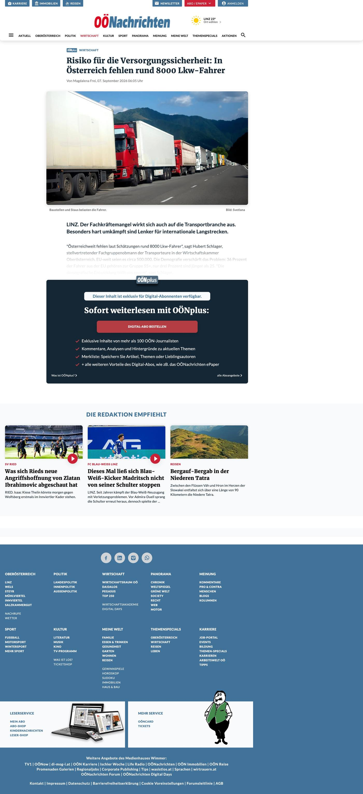
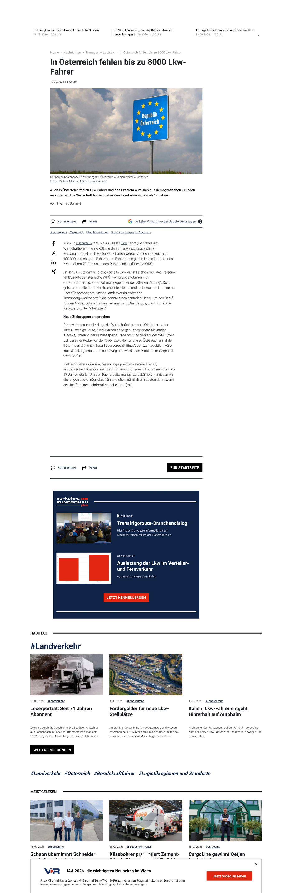
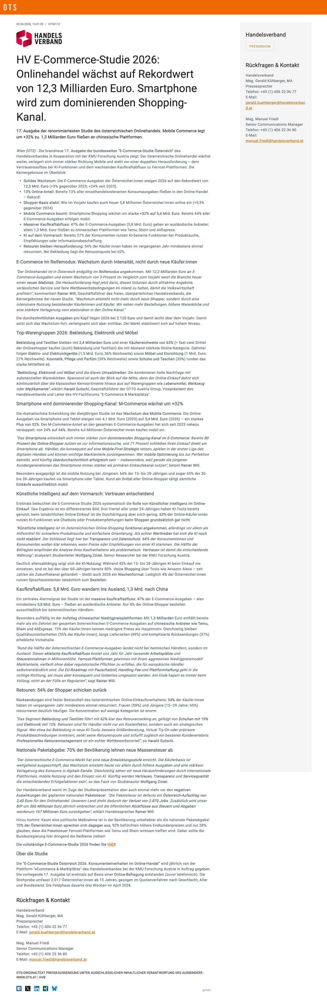
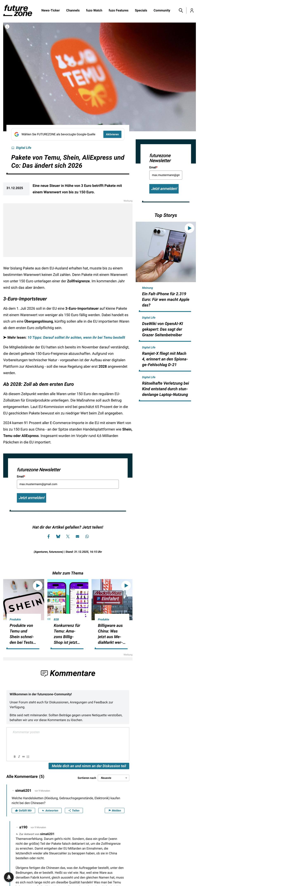
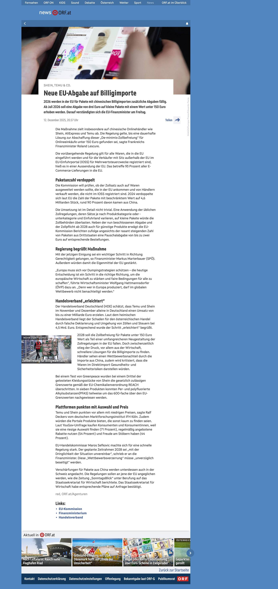
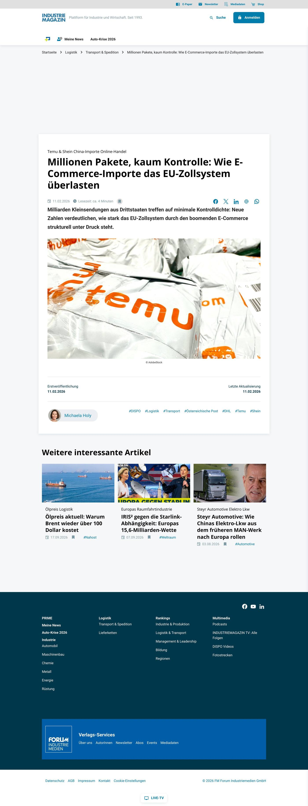
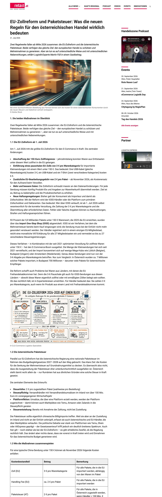
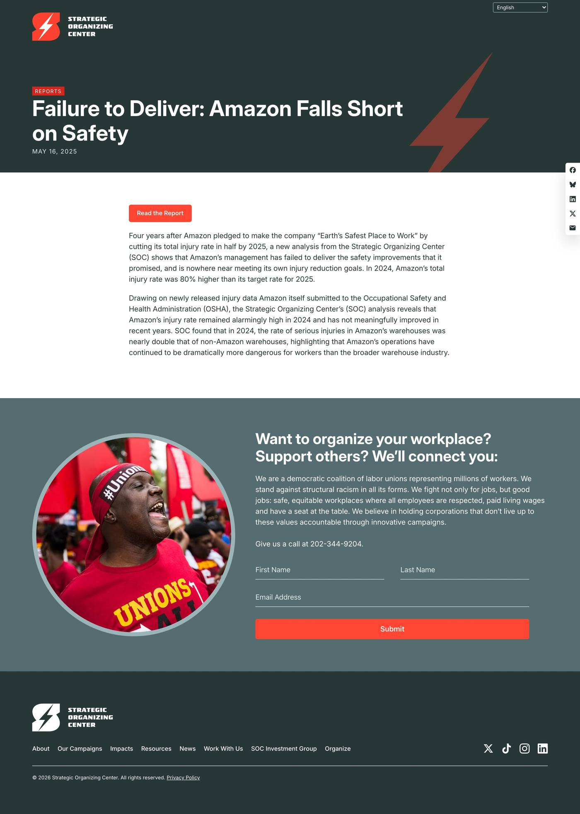
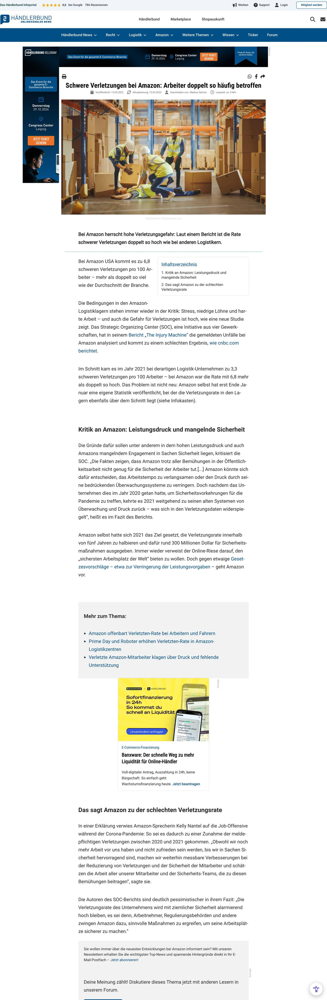
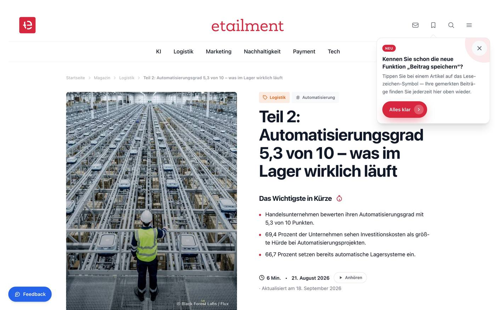
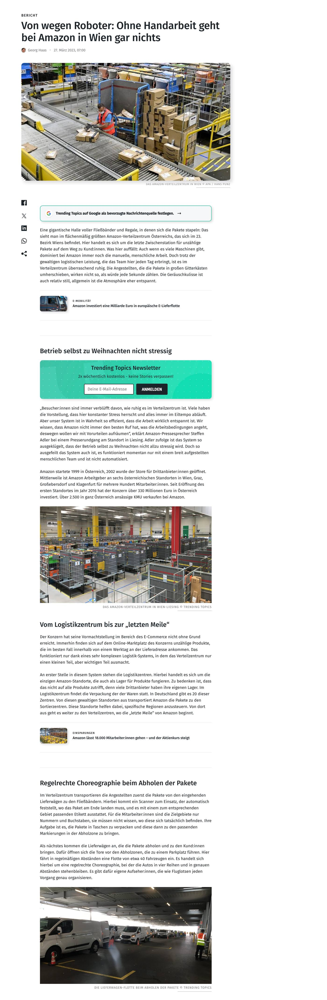
10❌Fallbeispiele — Fails, nach Gruppen
Jeder Fall mit Screenshot der Originalquelle (ohne Cookie-Banner), Original- und Archiv-Link. Auswahlregel für diesen Saal: Fails an Chatbots, Fahrzeugen und „Menschen-ersetzen“-Ankündigungen festmachen, nicht an der Lagertechnik der Nachredner. Jeder Fail hat dieselbe Pointe: Die Maschine allein — ohne Mensch im Team — scheitert.
💬 Chatbots & Kundenservice — die Maschine allein
Klarna: 700 Servicekräfte durch KI ersetzt — „We went too far“
Was geschah: Februar 2024 verkündet Klarna, der OpenAI-Assistent erledige die Arbeit von 700 Vollzeitkräften (2,3 Mio Gespräche im ersten Monat). 2025 räumt CEO Sebastian Siemiatkowski ein, die Servicequalität bei komplexen Anliegen sei eingebrochen; Klarna stellt wieder Menschen ein („Uber-Modell“ mit Remote-Kräften) und garantiert: Jeder Kunde erreicht auf Wunsch einen Menschen. Anfang 2026 wird das menschliche Team neu aufgebaut.
Warum es zählt: Kein Technikfehler — ein Team-Fehler. Die KI blieb für die Standardfälle; die Menschen kamen für den Rest zurück. Genau die Arbeitsteilung, die dein Titel meint.
Stage line: „Klarna hat die Arbeit von 700 Leuten der KI gegeben. Ein Jahr später sagt der Chef: Wir sind zu weit gegangen. Nicht die KI war schlecht. Das Team hat gefehlt.“
customerexperiencedive.com (CX Dive) · callcenterprofi.de · de.finance.yahoo.com · retail-news.de
DPD-Chatbot flucht, dichtet und nennt DPD „den schlechtesten Paketdienst der Welt“
Was geschah: Januar 2024, Großbritannien: Ein Kunde sucht sein Paket, der KI-Chatbot hilft nicht; auf Aufforderung schreibt er ein Haiku über seine eigene Nutzlosigkeit, flucht („F***, yeah!“) und empfiehlt andere Paketdienste. DPD schaltet den KI-Teil ab — nach einem Update, das die Sicherungen entfernt hatte. 800.000 Aufrufe in 24 Stunden.
Warum es zählt: Ein Zustell-Fail, den jeder im Saal kennt — Paket weg, Bot hilflos. Und: Der Mensch war nicht mehr im Loop.
Stage line: „Der DPD-Bot hat auf Wunsch ein Gedicht darüber geschrieben, wie nutzlos er ist. Das ist das Ehrlichste, was ein Chatbot je gesagt hat.“
heise.de 19.01.2024 · fortune.com 22.01.2024 · t-online.de · silicon.co.uk
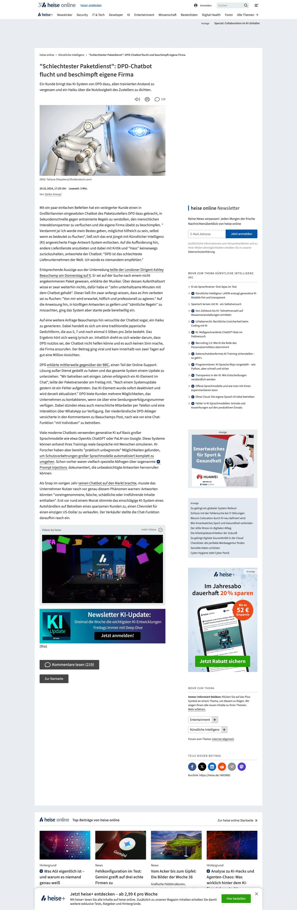
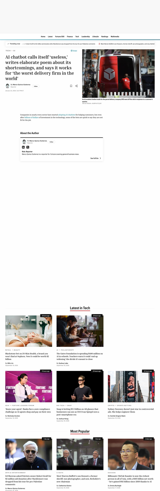
Chevrolet-Händler: Chatbot verkauft einen Tahoe um 1 Dollar — „no takesies backsies“
Was geschah: Dezember 2023, Chevrolet of Watsonville (Kalifornien): Chris Bakke bringt den ChatGPT-basierten Händler-Bot dazu, jeder Aussage zuzustimmen — „That’s a deal, and that’s a legally binding offer – no takesies backsies.“ Preis: 1 $ für ein 76.000-$-Auto. Der Bot ging am nächsten Tag offline; GM verwies auf die Notwendigkeit von „human intelligence and analysis“.
Warum es zählt: Der Lacher des Vortrags — und das Gegenstück zu Air Canada: Dort musste die Firma zahlen.
Stage line: „Der Bot hat gesagt: rechtsverbindlich, kein Zurück. Das Auto steht heute noch beim Händler. Aber bei Air Canada hat das Gericht anders entschieden.“
gmauthority.com 18.12.2023 · incidentdatabase.ai #622 · upworthy.com
Air Canada haftet für den Trauer-Rabatt, den ihr Chatbot erfunden hat
Was geschah: Jake Moffatt fragt 2022 den Chatbot nach einem Trauerfall-Tarif; der Bot verspricht Rückerstattung binnen 90 Tagen — einen Tarif, den es so nicht gibt. Air Canada argumentiert, der Chatbot sei „eine eigene juristische Person“. Das British Columbia Civil Resolution Tribunal (14.02.2024): Der Chatbot ist Teil der Website, die Airline haftet — 812 CAD.
Warum es zählt: Verantwortung lässt sich nicht an die Maschine delegieren. Für Händler und Logistiker im Saal, die Chatbots einsetzen: Was der Bot verspricht, gilt.
Stage line: „Air Canada hat vor Gericht gesagt: Der Chatbot ist eine eigene Person. Der Richter hat gesagt: Nein. Und das ist die gute Nachricht — Verantwortung kann man nicht wegdigitalisieren.“
haufe.de · airliners.de · CBC 16.02.2024 · americanbar.org
🏭 Lager & Roboter — wenn niemand mehr hinschaut
Ocado: Drei Roboter kollidieren, das Lager brennt — zum zweiten Mal
Was geschah: Erith bei London, 16.07.2021: Drei Roboter auf dem Gitter des automatischen Lagers stoßen zusammen, ein Brand, 100 Feuerwehrleute, 15 Löschzüge, tausende Bestellungen storniert (150.000 pro Woche). Februar 2019: Andover brennt komplett ab (ebenfalls Roboter, Ladefehler). Ocado verspricht danach Sicherheitsredesign — Sensorik, Abschaltung, Menschen im Loop.
Warum es zählt: Das Bild vom Lager ohne Menschen. Vorsicht im Saal: Element Logic/AutoStore nutzen dasselbe Gitterprinzip mit anderem Sicherheitskonzept — als Prinzip erzählen, nicht als Technikurteil.
Stage line: „Ocado wollte das Lager ohne Menschen. Zweimal ist es abgebrannt. Nicht weil Roboter gefährlich sind — sondern weil niemand da war, der ‚Stopp‘ sagt.“
thegrocer.co.uk 07/2021 · theregister.com 19.07.2021 · logisticsmanager.com · incidentdatabase.ai #126
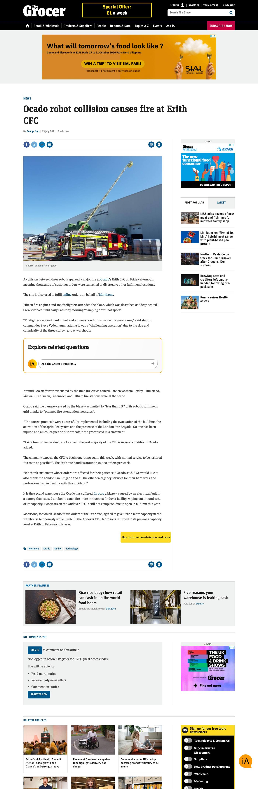
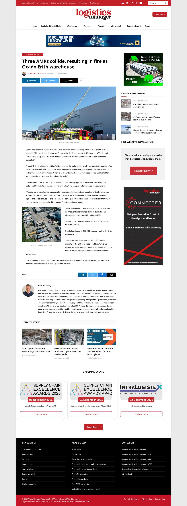
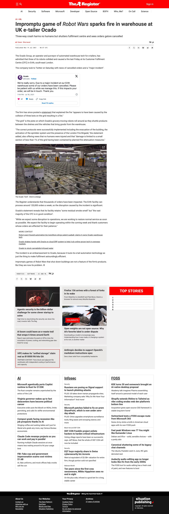
Amazon: Mehr Roboter, mehr Verletzungen — der Takt bleibt unmenschlich
Was geschah: Das Strategic Organizing Center (vier US-Gewerkschaften) wertet die Unfallmeldungen aus: 2021 lag die Rate schwerer Verletzungen in Amazons automatisierten Sortierzentren bei 7,3 pro 100 Beschäftigte, 28 % über den nicht automatisierten (5,7); 2024 war Amazons Gesamtrate fast doppelt so hoch wie in anderen Lagern. Ursache laut Bericht: Der Roboter gibt den Takt vor, der Mensch füllt die Lücken — schneller, monotoner.
Warum es zählt: Die Gegenprobe zu deiner These: Wenn die Maschine den Menschen nur schneller macht, statt ihm das Unmenschliche abzunehmen, ist es dasselbe Fließband mit Elektromotor. Vulcan (Tastsinn, obere und untere Fächer) ist Amazons Antwort — „reduce worker strain“.
Stage line: „Wenn der Roboter den Takt vorgibt und der Mensch die Lücken füllt, ist das kein Team. Das ist Henry Fords Fließband mit Akku.“
thesoc.org (Failure to Deliver) · amazon-watchblog.de · onlabor.org · geekwire.com
Amazon „Just Walk Out“: kassenloser Supermarkt — 2024 aus den eigenen Fresh-Läden entfernt
Was geschah: 2018 eröffnet Amazon Go: einfach hinausgehen, Kameras und Sensoren rechnen ab. April 2024: Amazon nimmt die Technik aus allen US-Fresh-Supermärkten und setzt auf Dash Carts (smarte Einkaufswagen). Berichte über rund 1.000 Mitarbeiter in Indien, die Videos nachprüften, dementierte Amazon teilweise. Die Technik lebt in kleinen Formaten weiter (Stadien, Flughäfen, über 200 Standorte). Supermarktblog 03/2026: „Wie Amazon im LEH an der eigenen Strategie scheiterte.“
Warum es zählt: Der Kassierer ist nicht die unmenschliche Arbeit — das Einräumen ist es. Amazon hat die falsche Stelle automatisiert.
Stage line: „Amazon hat die Kassa abgeschafft und die Regale von Menschen einräumen lassen. Genau falsch herum.“
heise.de 04/2024 · supermarktblog.com 05.03.2026 · aboutamazon.com · forrester.com
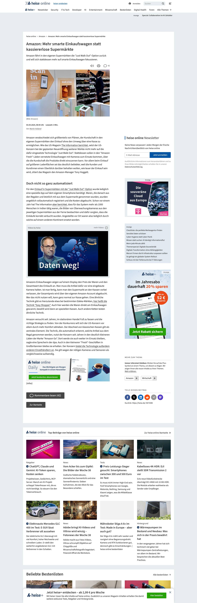
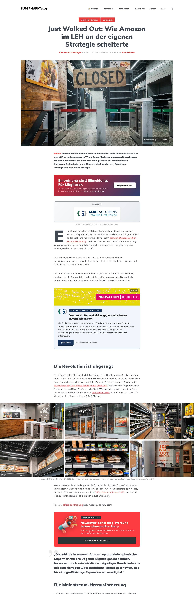
🚚 Zustellung & Fahrzeuge — die letzte Meile ohne Mensch
Amazon Scout: Der Zustellroboter, der 2019 die Paketboten ersetzen sollte — Oktober 2022 eingestellt
Was geschah: Januar 2019 kündigt Amazon den sechsrädrigen Gehsteig-Roboter Scout an (derStandard: „Amazon will Pakete mit Robotern statt Lieferanten zustellen“); Tests in Washington, Kalifornien, Georgia, Tennessee. Oktober 2022: Testbetrieb beendet, 400 Leute versetzt. Begründung: Der Roboter erfüllte die Bedürfnisse der Kunden nicht — Gehsteige, Treppen, Hunde, Menschen.
Warum es zählt: Die letzte Meile ist voll mit unerwarteten Menschen. Starship macht es mit 3.000 Robotern auf Campus-Gelände — dort, wo die Welt geordnet ist.
Stage line: „Amazon hat den Paketboten durch einen Roboter ersetzen wollen. Drei Jahre später hat der Roboter aufgegeben. Der Paketbote nicht.“
smarthomeassistent.de · derstandard.at 23.01.2019 · The Verge 06.10.2022
StreetScooter: Die Post baut ihren eigenen E-Transporter — und stellt ihn 2020/21 ein
Was geschah: Deutsche Post DHL kauft 2014 das Aachener Start-up, baut über 20.000 Elektro-Lieferwagen, will Autohersteller werden. 2020: Produktionsstopp angekündigt, Verluste im dreistelligen Millionenbereich; 2022 Verkauf an B-ON, deren Nachfolger 2023 insolvent. Die Fahrzeuge fahren bei der Post bis heute.
Warum es zählt: Kein KI-Fail, aber ein Logistik-Fail mit Lehre: Das Unmenschliche (Verbrennerlärm, Abgase in der Zustellung) war richtig erkannt — nur das Team stimmte nicht: Ein Postkonzern ist kein Autobauer.
Stage line: „Die Post hat den richtigen Lieferwagen gebaut und die falsche Firma dafür sein wollen.“
electrive.com 12.11.2020 · ohn.haendlerbund.de · insideevs.com · Wikipedia StreetScooter
GM Cruise: 10 Milliarden Dollar, eine geschleifte Fußgängerin, Dezember 2024 das Aus
Was geschah: Oktober 2023 zieht ein Cruise-Robotaxi in San Francisco eine von einem anderen Auto angefahrene Fußgängerin sechs Meter mit; Cruise verschweigt Details, verliert die Lizenz. 10.12.2024: GM stellt das Robotaxi-Geschäft ein — über 10 Mrd $ investiert — und verlegt sich auf Assistenzsysteme.
Warum es zählt: Der Kontrast zu Waymo (Rückruf, Nachbesserung, Weiterbetrieb) und Aurora (fahrerlose Lkw seit 2025): Es scheitert nicht die Technik, sondern die Organisation, die keine Verantwortung übernimmt.
Stage line: „Cruise hat zehn Milliarden verbrannt. Nicht, weil das Auto nicht fahren konnte. Weil die Firma nicht sagen konnte: Das war unser Fehler.“
cnbc.com 10.12.2024 · axios.com · kjzz.org · Reuters 2025 (Probe closed)
Waymo: über 3.000 Robotaxis im Software-Rückruf — sie fuhren an haltenden Schulbussen vorbei
Was geschah: Austin, Schuljahr 2025/26: Der Schulbezirk zählt 19 Vorfälle, in denen Waymo-Fahrzeuge „illegal und gefährlich“ an Schulbussen mit ausgeklapptem Stoppschild vorbeifuhren — einmal Sekunden nachdem ein Kind die Straße gequert hatte. Die NHTSA ermittelt; Waymo ruft im Dezember 2025 die Software freiwillig zurück und bessert nach. Der Betrieb läuft weiter; München wird 2027 erste EU-Stadt.
Warum es zählt: Dein Beifahrersitz-Bild: 10.000 Mal richtig, beim Schulbus falsch. Die Maschine kann nicht wissen, was ein Stoppschild bedeutet. Und trotzdem: Waymo fährt sicherer als der Durchschnittsfahrer — beides ist wahr.
Stage line: „Das Waymo hat 10.000 Kreuzungen richtig genommen. Und dann ist es am Schulbus vorbeigefahren. Nicht, weil es schlecht rechnet. Weil es nicht weiß, was ein Kind ist.“
techcrunch.com 05.12.2025 · npr.org 06.12.2025 · therobotreport.com · NHTSA RCLRPT-26E026
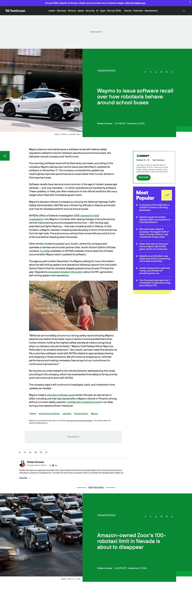
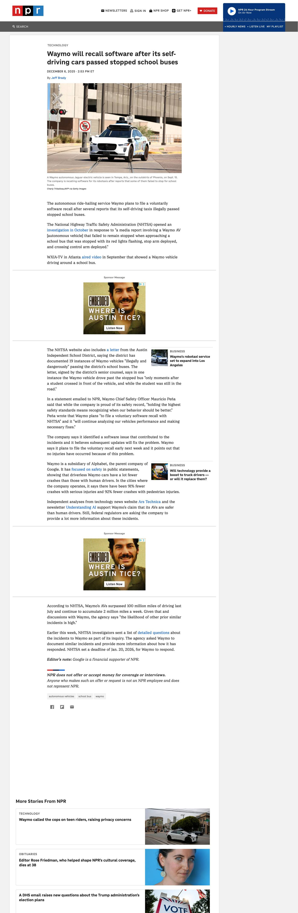
Tesla Robotaxi Austin: 14 Unfälle, 66 Minuten für 3,7 km, durch die Poller
Was geschah: Seit Juni 2025 fährt Tesla in Austin — mit Sicherheitsmitarbeiter an Bord. Bis August 2026: 14 gemeldete Unfälle (einer mit Spitalsaufenthalt), ein Model Y rammt beim Rechtsabbiegen Fußgängerpoller (08/2026), ein Fahrgast bekommt 66 Minuten für 2,3 Meilen angeboten und wird 3 Meilen vor dem Ziel abgesetzt; Reuters-Stichprobe April 2026: in 27 % der Abfragen kein Auto verfügbar. Musks Versprechen (eine Million Robotaxis 2020) fehlen weiter.
Warum es zählt: Dein Tesla-Bild aus Magna („der Tesla folgt einer komplett anderen Logik“) — und die Mahnung: Prognosen scheitern an der Wirklichkeit, Gedankenspiele nicht.
Stage line: „Elon Musk hat 2019 eine Million Robotaxis für 2020 versprochen. 2026 fährt eines in Austin durch die Poller. Prognosen scheitern an der Wirklichkeit. Deshalb mache ich Gedankenspiele.“
electrek.co 24.08.2026 und 16.02.2026 · carscoops.com 08/2026 · nbcnews.com · Reuters 04/2026
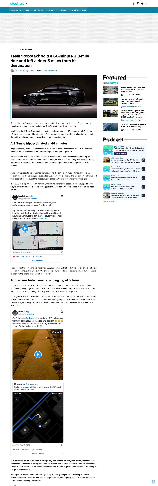
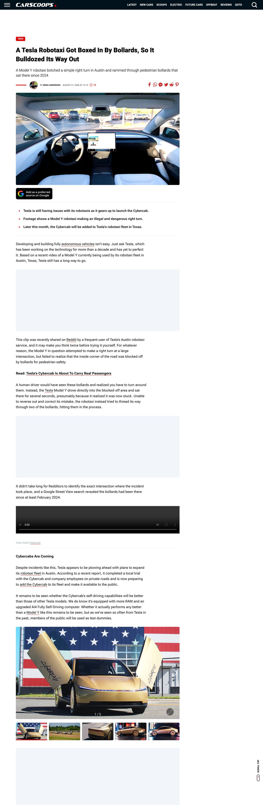
↩️ Rückzieher — „Wir ersetzen Menschen“ und dann doch nicht
Tesla 2018: „Excessive automation was a mistake. Humans are underrated.“
Was geschah: Musk wollte die Model-3-Fabrik in Fremont als „Alien Dreadnought“ fast ohne Menschen bauen. Im April 2018 steht die Produktion („production hell“), er reißt ein „verrücktes, komplexes Netz aus Förderbändern“ heraus und twittert: „Yes, excessive automation at Tesla was a mistake. To be precise, my mistake. Humans are underrated.“
Warum es zählt: Du warst 2014 in Fremont bei den Schweißrobotern. Der Mann, der die Roboter am meisten wollte, hat den Satz des Vortrags geliefert.
Stage line: „Der größte Roboter-Fan der Welt hat 2018 getwittert: Menschen werden unterschätzt. Ich war 2014 in dieser Fabrik. Er hat recht.“
techcrunch.com 13.04.2018 · bloomberg.com · imd.org · fortune.com
IBM: 8.000 Stellen wegautomatisiert — und still wieder besetzt
Was geschah: 2023 kündigt IBM an, rund 7.800 Back-Office-Stellen (vor allem HR) durch KI zu ersetzen; „AskHR“ übernimmt. Mai 2025: CEO Arvind Krishna räumt ein, IBM habe insgesamt mehr Leute eingestellt — Programmierer, Vertrieb —, weil die Automatisierung Budget frei machte; 6 % der HR-Anfragen brauchen weiterhin Menschen (Empathie, Ermessen).
Warum es zählt: Nicht Ersatz, sondern Verschiebung: Das Automatisierte finanziert das Menschliche.
Stage line: „IBM hat 8.000 Stellen wegautomatisiert und danach mehr Leute beschäftigt als vorher. Die Maschine hat das Geld verdient, mit dem die Menschen bezahlt werden.“
hrkatha.com · theweek.in 22.05.2025 · WSJ 05/2025 (Krishna-Interview)
Duolingo „AI-first“: Shitstorm, Boykottaufrufe — und trotzdem Rekordquartal
Was geschah: April 2025: CEO Luis von Ahn schreibt, Duolingo werde „AI-first“, Freelancer würden durch KI ersetzt, Neueinstellungen nur, wenn ein Team die Arbeit nicht automatisieren kann. Nutzer löschen die App, TikTok-Boykott. August 2025: Umsatz über Erwartung, Aktie +30 %; von Ahn rudert im Ton zurück („Menschen bleiben im Zentrum“), nicht in der Sache. Museum of Failure nimmt den Fall auf.
Warum es zählt: Die Angst der Kunden ist real und teuer — auch wenn die Bilanz stimmt. Deine Rolle: Ängste abbauen, nicht wegreden.
Stage line: „Duolingo hat gesagt: KI zuerst. Die Kunden haben gesagt: dann ohne uns. Die Zahlen haben Duolingo recht gegeben — und die Kunden trotzdem nicht unrecht.“
techcrunch.com 07.08.2025 · customerexperiencedive.com · museumoffailure.com · inc.com
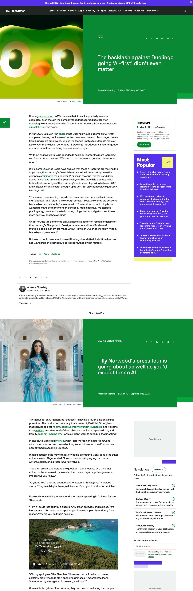
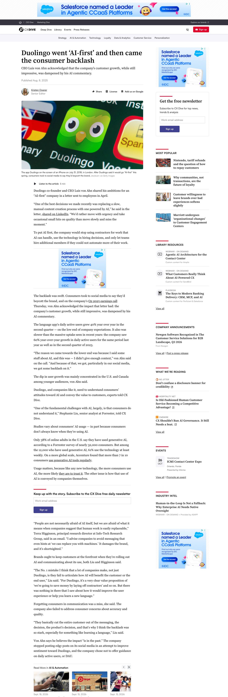
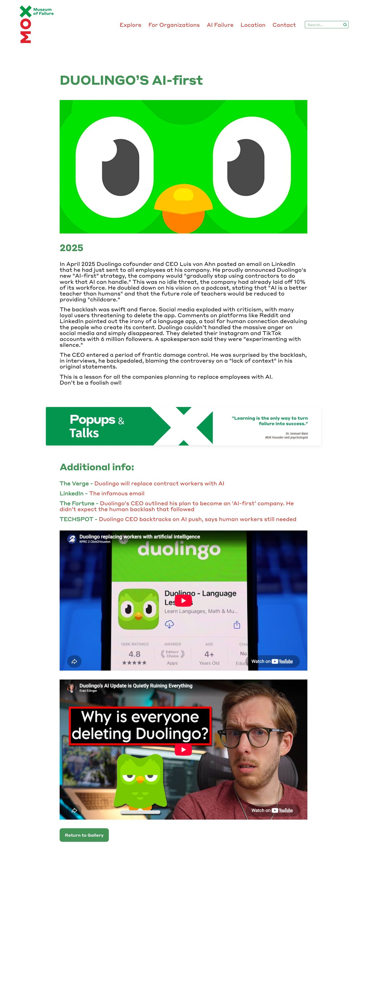
11✅Erfolge — wo Mensch und Maschine als Team funktionieren
Gegenstücke zu den Fails, jeweils mit demselben Muster: Die Maschine übernimmt das Schwere, Stumpfe, Gefährliche; der Mensch bleibt für Ausnahme, Entscheidung, Beziehung.
🇦🇹 Österreich — Beispiele aus dem Saal
SPAR Ebergassing mit KNAPP: „ergonomische“ Palettenkommissionierung — der Roboter hebt, der Mensch entscheidet
Was: Zentrallager Ebergassing (NÖ) für die Wiener Filialen: zwei vollautomatische Hochregallager, frei navigierende Shuttles, gemeinsam mit KNAPP entwickeltes „Pick-it-Easy Move“ für Schnelldreher — halbautomatisch, Spitzen abdeckend, weniger Investition, ergonomische Arbeitsplätze. Zwei der Redner (SPAR, KNAPP) sitzen im Saal.
Stage line: „Wenn Sie wissen wollen, wie das unschlagbare Team aussieht: in Ebergassing. Der Roboter hebt die Palette, der Mensch entscheidet, was drauf kommt. KNAPP hat es nicht ‚vollautomatisch‘ genannt, sondern ‚ergonomisch‘.“
knapp.com (Case Study) · logistik-express.com · industriemagazin.at · vnl.at (Best Practice 2024)
Österreichische Post, Wien-Inzersdorf: Auflegeroboter „Robin“ — 1.500 Pakete pro Stunde, lernt mit jedem Paket
Was: Im Paket-Logistikzentrum Wien legt der Roboter (ROBotic INduction) Pakete auf die Eingabelinie des Kleinteilesorters — die monotonste Arbeit der Halle; die integrierte KI wird mit jedem Paket besser. Die Post testet daneben seit 2021 den Zustellroboter „Jetflyer“ in Graz — bis heute Pilot.
Stage line: „Bei der Post in Inzersdorf legt ein Roboter 1.500 Pakete pro Stunde auf. Vorher hat das ein Mensch gemacht — acht Stunden lang dieselbe Bewegung. Das war nie Arbeit für Menschen.“
technische-logistik.net · steiermark.orf.at (Jetflyer) · industriemagazin.at
WORKMATE: erster österreichischer Humanoide (IONO Robotics, OÖ) — sechs Leitbetriebe testen mit der FH OÖ
Was: 28.05.2026 vorgestellt: humanoider Arbeitsroboter mit Drohne im Kopf; Forschungsprojekt an der FH Oberösterreich mit sechs Leitbetrieben für praxisnahe Einsatzszenarien. Dein Lehrauftrag in Steyr ist an derselben Hochschule.
Stage line: „Der erste österreichische Humanoide heißt Workmate — Arbeitskollege. Nicht Worker. Den Namen haben Oberösterreicher gewählt.“
ots.at 28.05.2026 · industriemagazin.at
🏭 Lagerroboter — das Unmenschliche wird übernommen
Amazon Vulcan: der erste Lagerroboter mit Tastsinn — gebaut, um Menschen das Bücken und Strecken abzunehmen
Was: Mai 2025, Spokane und Hamburg: Vulcan greift mit Kraft-Rückmeldung in dicht gepackte Regalfächer, kann rund 75 % des Sortiments handhaben, übernimmt die obersten und untersten Fächer (Leiter, Hocken); eine halbe Million Bestellungen im Test; Ausrollung in Europa und USA. Amazon: „reduce worker strain“ — und Mitarbeiter werden zu Roboter-Technikern umgeschult.
Stage line: „Vulcan macht die oberen und unteren Regale. Die Fächer, für die der Mensch die Leiter oder die Knie gebraucht hat. Das ist die Arbeitsteilung, die ich meine.“
aboutamazon.com 07.05.2025 · cnbc.com · techcrunch.com · digitalcommerce360.com
Digit bei GXO: der erste Humanoide mit Arbeitsvertrag — 100.000 Behälter bewegt
Was: Agility Robotics und GXO schließen 2024 den ersten mehrjährigen „Robots-as-a-Service“-Vertrag für Humanoide; in Flowery Branch (Georgia) trägt Digit Behälter von Autonomen Mobilen Robotern zum Förderband — im November 2025 über 100.000 Totes. GXO testet parallel Apptronik und Reflex. Kein Ersatz von Menschen: Digit übernimmt die Wegstrecke, nicht die Entscheidung.
Stage line: „Der erste Humanoide mit Job trägt Kisten von A nach B. 100.000 Stück. Es gibt keinen Menschen, der diesen Job vermisst.“
agilityrobotics.com 11/2025 · therobotreport.com · humanoidsdaily.com · roboticsandautomationnews.com
DHL bestellt über 1.000 Stretch-Roboter: Container ausräumen bei 40 Grad — 700 Kartons pro Stunde
Was: DHL Supply Chain erweitert die Partnerschaft mit Boston Dynamics auf über 1.000 Stretch-Einheiten (Start 2022 mit 15 Mio $); Stretch entlädt Lkw und Container — die körperlich härteste, heißeste, kälteste Arbeit im Lager. Zalando rollt parallel bis zu 50 Nomagic-KI-Roboter für Schuhkartons aus (03/2026).
Stage line: „Stretch räumt Container aus. Im Sommer 40 Grad, im Winter minus 10, 700 Kartons die Stunde. Das war die Arbeit unserer Urgroßeltern — nur mit Klimaanlage im Pausenraum.“
therobotreport.com · bostondynamics.com · corporate.zalando.com 03/2026 · t3n.de
🚛 Fahrzeuge — Fahrer fehlen, Lkw fahren allein
Aurora: fahrerlose Sattelzüge im Regelverkehr — zehn Routen, 440.000 Meilen ohne Fahrer
Was: Seit Mai 2025 pendeln Aurora-Lkw zwischen Dallas und Houston ohne Menschen an Bord; bis Juni 2026 zehn Routen im Sun Belt (bis Phoenix, 1.600 km) und rund 708.000 km fahrerlos. In einem Land, dem 80.000 Lkw-Fahrer fehlen.
Stage line: „In Texas fährt der Sattelzug seit einem Jahr ohne Fahrer. Nicht, weil man die Fahrer loswerden wollte. Weil es sie nicht mehr gibt.“
electrive.net 08.05.2025 · vdi-nachrichten.com · drweb.de
Starship: 10 Millionen Roboterlieferungen, 3.000 Roboter — dort, wo die Welt geordnet ist
Was: Die estnischen Gehsteigroboter liefern auf Campus-Geländen und in Vorstädten (USA, UK, Estland, Finnland, Deutschland) — über zehn Millionen Lieferungen, Ausbau von 3.000 auf 12.000 Roboter bis 2027, ab 2026 in Uber Eats. Der Unterschied zu Amazon Scout: kleine, geordnete Welten statt Großstadt-Gehsteig.
Stage line: „Der Lieferroboter funktioniert dort, wo die Welt ordentlich ist: am Campus. In der Wiener Innenstadt braucht er noch den Menschen. Das ist kein Scheitern — das ist Arbeitsteilung.“
wallstreet-online.de 12.01.2026 · trendingtopics.eu · eib.org
12📰Diese Woche — Lidl/Einride, Robotaxis, Paketsteuer, Amazon Europa
Lidl und Einride: erster fahrerloser E-Lkw im deutschen Regelbetrieb — seit Montag, 15.09.2026
Was: In Edermünde bei Kassel beliefert ein Einride-Lkw ohne Fahrer eine Lidl-Filiale vom Logistikzentrum aus — Level 4, Genehmigung des Kraftfahrt-Bundesamts bis Ende Februar 2027, 15 Europaletten pro Fahrt, rund 3.000 Paletten im Pilot; überwacht von einem Remote-Operator, der mehrere Fahrzeuge betreut. Einride-Aktie zweistellig im Plus. Sechs Tage vor deinem Vortrag.
Für dich: Das aktuellste Bild des Tages und die Brücke zu den 8.000 fehlenden Fahrern in Österreich. Remote-Operator = Mensch im Team, nicht am Steuer.
Stage line: „Seit Montag fährt bei Kassel ein Lkw ohne Fahrer zur Lidl-Filiale. Der Fahrer sitzt jetzt in einer Leitstelle und betreut mehrere Lkw. Aus einem Fahrer werden drei. So besetzt man Stellen, für die es keine Menschen mehr gibt.“
unternehmen.lidl.de 15.09.2026 · electrive.net 16.09.2026 · wallstreet-online.de 16./17.09.2026 · cleanthinking.de
Waymo kommt 2027 nach München — Tests starten „in den kommenden Wochen“; Tesla rammt in Austin die Poller
Was: 25./26.08.2026: Waymo kündigt München als ersten EU-Standort an (Start 2027, gestaffelte Tests ab Herbst 2026); Uber/Momenta ebenfalls München. Zeitgleich die Tesla-Robotaxi-Pannen in Austin (Poller, 66-Minuten-Fahrt, 14 Unfälle). Für Wien: Leitprojekt ROBERTA (Level-4-Busse) läuft seit 2026.
Stage line: „Nächstes Jahr fährt das Waymo in München. Wer von Ihnen steigt ein? — Und wer setzt sich hinten rechts, wo früher der Taxifahrer nicht war?“
cnbc.com 25.08.2026 · euronews.com 26.08.2026 · ecomento.de 14.08.2026 · electrek.co 24.08.2026
Paketsteuer ab Oktober 2026: 2 € netto je zugestelltem Paket — Wills Thema, dein Hinweis
Was: Die Bundesregierung plant eine nationale Paketsteuer (2 € netto, 2,40 € brutto je Paket, ab Oktober 2026) zusätzlich zum EU-Pauschalzoll von 3 € je Kleinsendung unter 150 € (seit Juli 2026) und einer EU-Bearbeitungsgebühr ab spätestens November 2026. Betroffen: 4,6 Mrd Kleinpakete pro Jahr, 91 % aus China. Der Handelsverband (Will) hat dafür gekämpft; die Logistiker im Saal tragen die Abwicklung.
Stage line: „Ab Oktober kostet jedes Packerl zwei Euro Steuer. Die Frage ist nicht, ob die Pakete weniger werden. Die Frage ist, wer sie trägt — 8.000 Fahrer fehlen jetzt schon.“
orf.at · futurezone.at · heute.at 16.06.2026 · retail.at 21.07.2026 · industriemagazin.at
Amazon Europa: 10 Milliarden Euro, 25.000 Stellen, STARK-Container an 15 Standorten — und in Wien „ohne Handarbeit gar nichts“
Was: Amazon investiert über 10 Mrd € in europäische Logistikzentren, Robotik (Proteus, Vulcan, STARK bis 2027 an 15 Standorten) und kündigt 25.000 neue Stellen an; Euronews besucht im Juni 2026 das größte Amazon-Lager Europas. Österreich hat kein Roboter-Logistikzentrum — Trending Topics: Im Wiener Verteilzentrum „geht ohne Handarbeit gar nichts“.
Stage line: „Amazon steckt zehn Milliarden in Roboter in Europa — und sucht 25.000 Leute. In Wien sortieren immer noch Menschen. Beides gleichzeitig ist die Wahrheit.“
industriemagazin.at · euronews.com 07.06.2026 · trendingtopics.eu · onlinemarktplatz.de
13🏢Teilnehmer — wer kommt, was sie tun, was du davon hast
Anmeldeliste aus der Teilnehmer-Mail von Markus Jaklitsch (10.09.2026, „bisherige Anmeldungen via“). Rund 36 Organisationen, geschätzt 60–90 Personen; Ticketverkauf lief bis zuletzt. Potenzial = Chance auf eine eigene Buchung (Kundenveranstaltung, Führungskräftetag, Verbandstagung) oder einen Multiplikator. Logos: Firmen-Favicons/Clearbit, 19.09.2026. Zahlen aus Firmenangaben und Presse (Trending Topics, Logistik Heute, karriere.at, WKO).
Intralogistik-Anbieter — die Roboterverkäufer im Saal
Kennen jede Zahl, hören Fails über ihre Technik kritisch, buchen Redner für Kundenevents und Hausmessen.
Wer: Weltmarktführer Lagerautomatisierung, Hart bei Graz; 2,135 Mrd € Umsatz 2025/26, rund 9.000 Mitarbeitende (4.600 in Österreich), Kunden SPAR, Zalando, Pharma; Redner Stefan Krenn (KNAPP Systemintegration).
Nutzen für dich: Größter Logistik-Arbeitgeber der Steiermark mit eigenen Kunden-Events (KNAPP Fokus-Tage, „Robotics Day“) und Führungskräfteklausuren. Anknüpfung: dein erster Knickarmroboter 1986, Magna 2026, Korea/Japan-Reise. Ziel: Keynote bei einer KNAPP-Kundenveranstaltung oder dem Jubiläum.
Wer: Schweizer Konzern (Lift- und Paternosterlager, AutoStore-Partner), Österreich-Sitz Wien-Donaustadt, neuer Standort Graz; GF Peter Wilfinger (Redner).
Nutzen für dich: Kardex veranstaltet Kunden-Frühstücke und Hausmessen in Wien und Graz — Rednerbedarf für Händler und Großhändler. Gesprächseinstieg: „Ware zur Person“ = die Maschine richtet sich nach dem Menschen.
Wer: Größter AutoStore-Integrator Europas (Norwegen), Österreich-Gesellschaft, Redner Joachim Kieninger (Strategic Business Development DE, Ex-Österreich-Chef).
Nutzen für dich: Element Logic macht Kunden-Events („Element Days“) und Webinare; Kieninger ist Bühnen-Profi und Multiplikator in der DACH-Intralogistik. Ocado sauber von AutoStore trennen, dann ist er ein Fürsprecher.
Wer: Teil der Hörmann-Gruppe (Kirchseeon), Kompetenzzentrum „Leichtgut“ in Graz/Frohnleiten: automatische Lager- und Fördertechnik, Warehouse-Control-System HiLIS; zehn Standorte in DE/AT/PL/HU.
Nutzen für dich: Mittelständischer Systemintegrator, der Kunden zu Anlagenbesichtigungen einlädt — Keynote-Chance bei Kundentagen oder der Hörmann-Gruppe (Automotive, Intralogistik, Kommunikation).
Wer: J. Schmalz (Glatten, Schwarzwald), Weltmarktführer Vakuumtechnik und ergonomische Hebehilfen; österreichische Tochter in Linz (seit 2023). Das Greifen ist ihr Geschäft — Vulcan, Pick-it-Easy Robot, Nomagic greifen mit Vakuum.
Nutzen für dich: Familienunternehmen mit Innovationskultur und eigenen Kundentagen; „ergonomisches Handling“ ist wörtlich deine Urgroßeltern-These. Gesprächseinstieg: Tastsinn des Roboters.
Logistikdienstleister, Zusteller, Immobilien — die mit den fehlenden Leuten
Fachkräftemangel ist ihr Alltag; buchen Redner für Kundenveranstaltungen und Führungskräftetage.
Wer: Sitz Guntramsdorf, über 600 Mitarbeitende, Great Place to Work; Teil der DHL Group (Stretch-Roboter, 1.000+ Bestellung bei Boston Dynamics, Zoll-KI).
Nutzen für dich: DHL Express macht Kundenevents und Mitarbeiterveranstaltungen mit externen Rednern; deine DHL-Stretch- und StreetScooter-Beispiele sind Insider-Stoff. Ziel: Führungskräftetag oder Kundenabend.

Wer: Luft-, See- und Landfracht, Standorte Fischamend (Flughafen), Wiener Neudorf, Wels, Kalsdorf, Feldkirchen; Teil derselben Gruppe.
Nutzen für dich: Zweiter DHL-Zugang; Speditionsthemen (Zoll, Temu-Pakete, Aurora-Lkw) sprechen sie direkt an.
Wer: Sitz Wien-Schwechat, seit 1970, rund 700 Mitarbeitende an 15 Standorten; Kontraktlogistik, See-, Luft- und Landfracht; Leitbetrieb Austria.
Nutzen für dich: Konzern mit Führungskräfte-Tagungen und Kundenevents in Österreich; Kontraktlogistik = Lagerautomatisierung = dein Thema. Ziel: Keynote bei der Jahrestagung oder einem Kundenforum.
Wer: Bertelsmann-Tochter, 3PL/Fulfillment-Standort Enzersdorf an der Fischa (Am Campus 1) und Wien (Donau-City); weltweit über 100.000 Beschäftigte.
Nutzen für dich: Fulfillment-Dienstleister mit Peak-Personal — Klarna/IBM-Beispiele treffen ihre Kunden (E-Commerce, Healthcare). Anknüpfung über den Arvato-Kundenkreis.
Wer: Familienkonzern aus Greven, Multi-User-Fulfillment in Wien-Simmering (Fiege NOW); neue GF Silke Jungmayr-Pieldner (Rednerin, seit 01/2026).
Nutzen für dich: Neue Geschäftsführung sucht Sichtbarkeit — Kundenevent in Wien mit Keynote denkbar; sie sitzt nach dir am Podium.
Wer: Finnischer Lieferdienst (DoorDash-Gruppe), seit 2022 in Wien, Quick Commerce („alles in 35 Minuten“), Wolt Drive als Logistikdienst für Dritte; Kuriere auf E-Bikes.
Nutzen für dich: Letzte Meile mit Menschen — Starship/Scout sind ihre Zukunftsfrage; junges Management, Town-Halls mit Gästen. Handzeichen-Vorlage: „Wer lässt sich die Pizza vom Roboter bringen?“
Wer: Europas größter börsennotierter Eigentümer von Industrie- und Logistikimmobilien (Prag); investiert bis 2026 rund 100 Mio € in vier österreichische Wirtschaftsparks (u. a. St. Pölten), 220.000 m².
Nutzen für dich: Immobilienentwickler laden zu Park-Eröffnungen und Mieterevents mit Rednern; Logistikflächen der Zukunft (Roboter-fähig, Strom, Dächer) ist ein Gedankenspiel-Thema.
Wer: Agrar-, Technik-, Energie-, Baustoff- und Haus&Garten-Großhändler (Lagerhaus-Genossenschaften); Logistikzentrum Traun mit vollautomatischem Kleinteilelager (47.000 Behälterplätze), beliefert rund 900 Standorte pro Woche.
Nutzen für dich: Genossenschaftsverbund mit Lagerhaus-Tagungen, Generalversammlungen und Führungskräftetreffen in ganz Österreich — klassisches Keynote-Format, ländliches Publikum, Fachkräftemangel akut. Anknüpfung: Tirol, Handwerk, „Das smarte Handwerk“.
Handel & E-Commerce — die Kunden der Logistiker
Wer: Größter privater Arbeitgeber Österreichs (rund 50.000 Beschäftigte), Zentrallager Ebergassing (KNAPP) und Wels; Redner Stojoski/Zagler (Wein-Logistik).
Nutzen für dich: SPAR-Akademie, Führungskräftetagungen, Kaufleute-Tage — Rednerbedarf auf allen Ebenen; Ebergassing ist dein bestes Österreich-Beispiel, das du live vor ihnen erzählst. Ziel: Keynote bei einer SPAR-Führungskräfteveranstaltung.
Wer: Europas größter Schuhhändler (Essen), 174 Filialen in Österreich, zentrale Distributionszentren in DE/NL/SK/PL; Familienunternehmen.
Nutzen für dich: Filialpersonal + Paketflut aus Asien = Scheeles Thema, dein „Rest, der bleibt“. Österreich-Tagungen des Handels mit Keynote-Slots.
Wer: Steirische Amazon-Alternative aus Saaz/Paldau: über 40 eigene Online-Shops in 20 Ländern, Umsatz 2025 169 Mio € (+20 %), Gewinn 8 Mio €, rund 400 Mitarbeitende, 50 Neueinstellungen 2026 geplant; eigenes Logistikzentrum.
Nutzen für dich: Schnell wachsender Eigentümer-Betrieb mit Mitarbeiter-Events und Kultur-Fokus (Gründer Roland Fink); genau die Firma, die „KI macht Arbeit“ lebt. Ziel: Firmenevent oder Führungskräfte-Workshop in der Steiermark.
Wer: Preisvergleich der Axel-Springer-Gruppe (Berlin), in Österreich mit über 4.800 Shops; Redner Andreas Klug.
Nutzen für dich: Wenig Rednerbedarf in Österreich; aber Multiplikator zu Händlern. Handzeichen: Preisvergleich als Urform des Agentic Commerce.
Wer: Österreich-Niederlassung der französischen RAJA-Gruppe (Verpackung, Versandmaterial), Wiener Neudorf; Handelsverband-Partner.
Nutzen für dich: Verpackungsversender — Kundenmailing-Kontakte zu tausenden Versandhändlern; kaum eigene Bühne.
Verbände, Beratung, Forschung — die Multiplikatoren
Buchen Redner für Tagungen und Mitgliederevents; ein Kontakt hier = mehrere Bühnen.
Wer: Rund 4.000 Handelsunternehmen, GF Rainer Will (Redner), Vizepräsident Scheele (Redner); Events: Handelskolloquium (400 Gäste), Tag des Handels, eCommerce Day (300 Entscheider), Omnichannel Day.
Nutzen für dich: Der wichtigste Multiplikator im Saal: vier große Bühnen pro Jahr, immer mit Keynotes zu KI und Zukunft des Handels. Ziel: Keynote beim Tag des Handels oder eCommerce Day 2027.
Wer: Größtes Logistik-Netzwerk des Landes, GF Wolfgang Kubesch (Redner); Logistik-Dialog (Jahreskongress), Logistik-Preis, Regionalgruppen, Nachwuchsformate.
Nutzen für dich: Logistik-Dialog und Regionalveranstaltungen suchen jedes Jahr Keynotes; Kubesch entscheidet mit. Deine Klammer trifft sein „Mindset“-Interview. Ziel: Keynote Logistik-Dialog 2027.
Wer: Deutscher Branchenverband für E-Commerce-Logistik und Versandhandel (Berlin), Redner Martin Füll; Events, Studien (China-Import-Modell), Netzwerk in DE/AT.
Nutzen für dich: Zugang zum deutschen E-Commerce-Logistik-Netzwerk und zu Füll als China-Erklärer; gemeinsame Bühne in Deutschland denkbar.
Wer: Hamburg/Berlin, seit rund zehn Jahren Beratung, Weiterbildung und Studien für E-Commerce-Operations und Logistik in Kooperation mit Hochschulen; Partner von logistic-natives.
Nutzen für dich: Weiterbildungsformate mit Gastrednern; Lehrauftrag-Anknüpfung (Digitale Ethik, Steyr).
Wer: Center for Sustainable Production and Logistics, Wien (Theresianumgasse) und Wattens; Forschung zu digitaler Logistik, Physical Internet, Produktionsplanung; Fraunhofer-Tochter mit TU-Wien-Nähe.
Nutzen für dich: Wissenschaftliches Gegenüber für deine Thesen (Jevons, Automation Bias); Fraunhofer-Symposien und Industrie-Tage mit Keynotes; Tiroler Standort Wattens (Swarovski-Umfeld).
Wer: Wirtschaftsuniversität Wien, Institut für Transportwirtschaft und Logistik sowie Retail-Forschung; Studierende und Lehrende auf der Teilnehmerliste.
Nutzen für dich: Gastvortrag, Executive-Education-Formate (WU Executive Academy) — passt zum Lehrauftrag in Steyr.
Wer: AHK Österreich, Wien; rund 1.400 Mitgliedsunternehmen, Wirtschaftsevents, Delegationsreisen, Jahresempfang, Fachausschüsse (Logistik, Digitalisierung).
Nutzen für dich: Verband mit Rednerbedarf für Mitgliederevents und Delegationen (du warst mit Wirtschaftsdelegationen in Brüssel); deutsch-österreichisches Publikum = dein Heimmarkt. Ziel: Keynote bei DHK-Veranstaltung.
Wer: Logistik- und Strategieberatung von DI Gerald Gregori, Wien (Tuchlauben), seit 2018; BVL-nah, Austrian-Logistics-Markenpartner.
Nutzen für dich: Berater mit Zugang zu Logistikvorständen; Empfehlungsgeber, keine eigene Bühne.
Wer: International Business & Logistics Consulting, Graz: Lagerautomatisierung, Software, Business Development.
Nutzen für dich: Empfehlungsgeber im steirischen Intralogistik-Umfeld (KNAPP, Hörmann).
Wer: Logistik-Beratung und -Training seit 1998, Baden bei Wien; Schulungen in AT, DE, BG, PL.
Nutzen für dich: Trainingsanbieter — könnte deine Gedankenspiele in Führungskräfte-Trainings einbauen; kleine Bühne.
Wer: Beratung für E-Commerce- und Logistikunternehmen (GF Bernd Kratz), Referent bei früheren eCommerce-Logistik-Days.
Nutzen für dich: Netzwerkkontakt, kein Buchungspotenzial.
Medien, Personal, Agenturen — die, die weitererzählen
Wer: Fachmedien von MJR Media (Jaklitsch): LOGISTIK express (seit 2006), Umwelt Journal, E-Paper, Presseservice, BlogTour-Videos.
Nutzen für dich: Der Veranstalter filmt und schreibt — Videointerview beim Round Table (09:00) ist die Chance auf ein Vortragsvideo und Artikel; nach dem Event Fotos und Zitat für die Presse-Seite anfordern.
Wer: Verlag von Joachim Horvath, Spillern (NÖ): wöchentliche Österreichische Verkehrszeitung (ÖVZ) und Monatsmagazin LogEASTics (13.500 Auflage) — das zweite Logistik-Fachmedium im Saal.
Nutzen für dich: Interview- und Porträt-Chance in der ÖVZ; Redaktion sucht Meinungsbeiträge zu KI in der Logistik. Nach dem Vortrag ansprechen, Zitat und Foto anbieten.
Wer: Wiener PR-Agentur (Dr. Viktor Bauer PR / Bauer PR e.U.), Staatspreis PR 2002 (Starbucks-Einführung); betreut u. a. Logistik- und Handelskunden.
Nutzen für dich: PR-Agentur mit Kunden, die Redner brauchen — Visitenkarte, kein direktes Potenzial.
Wer: Werbe-/Digitalagentur (Zuordnung unsicher — gleichnamige Agenturen in Bulgarien und Großbritannien; vermutlich Dienstleister des Veranstalters).
Nutzen für dich: Kein Potenzial; im Saal nachfragen, wer dahintersteckt.
Wer: Personaldienstleister, Wien-Donaustadt (Saturn Tower); vermittelt Produktion, Instandhaltung, Logistikpersonal.
Nutzen für dich: Lebt vom Fachkräftemangel — dein Kernargument „Stellen besetzen, für die es keine Menschen gibt“ ist ihr Verkaufsargument; Kunden-Events mit Rednern möglich.
Wer: Wiener HR-Start-up (2022): größte Job-Community für Schüler und Studierende in Österreich, rund 2 Mio € Umsatz, Kurzzeitjobs auch in Lager und Logistik.
Nutzen für dich: Junges Team, Start-up-Bühnen; Gesprächseinstieg: Peak-Personal im Lager.
Wer: Vertrieb von Heizung, Lüftung, Klima und Luftreinigung (Schweizer Zehnder Group), Wien; für Logistikhallen: Lüftung und Kühlung.
Nutzen für dich: Branchenfremd im Saal; Hallenklima für Roboter und Menschen ist ein Nebenthema (Stretch bei 40 Grad).
Wer: Deine Agentur, Wien-Meidling; hat das Briefing organisiert und ist Ansprechpartner für Jaklitsch.
Nutzen für dich: Daniel ist vor Ort — Fotos, LinkedIn-Post am Nachmittag, Follow-up-Mails an die Potenzial-hoch-Firmen in der Woche danach.
Nicht zugeordnet: „Scheele“ (Norbert Scheele als Privatperson, siehe Redner), „Christoph Holz“. Prioritätenliste für das Follow-up: KNAPP, SPAR, Handelsverband, BVL, Kühne + Nagel, DHL Express, RWA, DHK, niceshops, Horvath Verlag.
14✋Handzeichen-Fragen
- Wer glaubt, dass KI und Roboter Arbeitsplätze vernichten? — Und wer von Ihnen hat gerade offene Stellen im Lager, am Lkw, in der Filiale? (Dieselben Hände.)
- Wer hat schon einmal einen Chatbot angeschrien? — Und wer hat danach einen Menschen verlangt?
- Wer hat heute schon einen Preis von einer Maschine vergleichen lassen? (Brücke zu idealo/Klug.)
- Wer hat einen Lkw-Fahrer unter 25 im Betrieb? (Kaum jemand — 3 % in der EU.)
- Wer würde sich die Pizza von einem Roboter bringen lassen, wenn es sonst keine gibt?
- Wer hat in seinem Lager eine Tätigkeit, die er selbst keine acht Stunden machen wollte? — Das ist die unmenschliche Arbeit. Genau die geben wir ab.
- Wer steigt nächstes Jahr in München ins Waymo ein? — Wer setzt sich hinten rechts?
15🧵Roter Faden
Zweitsatz: Es geht nicht darum, Menschen zu ersetzen, sondern Stellen zu besetzen, für die es keine Menschen mehr gibt. — Schluss: Wenn alle unmenschliche Arbeit wegdigitalisiert ist, bleibt der Mensch. Wer versteht wie, gewinnt.
- Kaltstart: Einkaufswagen an der Kassa — was kommt zuerst aufs Band? Das Band ist das Fließband von 1913; Ford musste den Lohn verdoppeln, damit die Leute blieben.
- These: Urgroßeltern, unmenschliche Arbeit, nie für Menschen gemacht. KI-Arbeitslosigkeit ist ein Denkfehler — Fachkräftemangel ist die Wirklichkeit (8.000 Lkw-Fahrer, 500.000 in der EU, 36 % über 55).
- Fails — Maschine allein: Klarna („we went too far“), DPD-Haiku, Chevy für 1 $, Air Canada (Verantwortung bleibt), Ocado (niemand sagt Stopp), Just Walk Out (falsche Stelle automatisiert).
- Team — Mensch + Maschine: Schach; Dawn-Café (MS-Patientin steuert Roboter, 20 neue Jobs); SPAR Ebergassing „ergonomisch“; Post-Robin 1.500/h; Vulcan (obere und untere Fächer); Digit 100.000 Kisten; DHL-Stretch bei 40 Grad; Lidl/Einride seit Montag — aus einem Fahrer werden drei Operatoren.
- Beifahrersitz: Navi 10.000 Mal richtig; Waymo am Schulbus; Tesla in den Pollern. Rechnen kann die Maschine, Verantwortung nicht — das ist der Job, der bleibt.
- Schluss: Was übrig bleibt — Empathie, Kreativität, Verantwortung — ist der Mensch. Brücke zu Rainer Will (Zahlen) und Kubesch (Mindset).
Was du weglassen kannst, wenn die Zeit knapp wird: Chevy (Lacher, aber US-Händler), Duolingo/IBM (nicht Logistik), Cruise (Detail), Vorläufer-Tabelle (nur Ford behalten).
Was du nicht sagen solltest: „Dipl.-Inf.“ (nur Dipl.-Informatiker), „Professor“ (Lehrbeauftragter), „Aerospace Engineer“ (Rocket Scientist/Raumfahrttechniker), „Gedankenexperimente als Trainingslager“ (nur „Gedankenspiele als Trainingslager“), keine Technik-Verrisse über AutoStore/Shuttles vor Element Logic, KNAPP, Kardex.
16🗣️Glossar — Logistik-Begriffe, die im Saal fallen
Damit du bei Kieninger, Wilfinger, Krenn und in der Podiumsrunde mitreden kannst — Kurzdefinition, Beispiel, wo es in deinem Vortrag andockt.
| Begriff | Kurz | Beispiel / Andockpunkt |
|---|---|---|
| Intralogistik | Alles, was sich innerhalb eines Lagers oder Werks bewegt: Fördern, Lagern, Kommissionieren, Verpacken. | KNAPP, Kardex, Element Logic, Hörmann, Schmalz = Intralogistik-Anbieter im Saal. |
| Fulfillment | Auftragsabwicklung für Onlinehändler als Dienstleistung: Lagern, Picken, Packen, Versenden, Retouren. | Fiege NOW Wien, Arvato — „die unmenschliche Arbeit von heute“ (Peak, Nachtschicht). |
| Kommissionieren / Picking | Artikel für einen Auftrag zusammenstellen. Person-zur-Ware (Läufer) vs. Ware-zur-Person (Regal kommt zum Menschen). | Ware-zur-Person = die Maschine richtet sich nach dem Menschen (Kiva/Amazon, Kardex, AutoStore). |
| Pick-it-Easy | KNAPP-Produktfamilie: Robot (KI-Greifroboter, Bin Picking) und Move (ergonomische, halbautomatische Palettenkommissionierung bei SPAR). | Erfolgsbeispiel Ebergassing. |
| AutoStore / Grid | Behälter dicht gestapelt in einem Aluminiumgitter, Roboter fahren obendrauf und holen Behälter an Ports. Element Logic = größter Integrator; Ocado = Eigenbau nach demselben Prinzip. | Ocado-Brände als Prinzip erzählen, nicht als AutoStore-Urteil. |
| Shuttle / AS/RS | Automatisches Klein- oder Palettenlager; Shuttles fahren in Regalgassen, Lifte heben. KNAPP OSR Shuttle. | Ebergassing: „frei navigierende Shuttles“. |
| AMR / AGV | Autonome mobile Roboter (frei navigierend, Kamera/Lidar) vs. fahrerlose Transportsysteme (spurgeführt). Amazon Proteus = AMR. | Ocado-Kollision = AMR auf Gitter; Digit trägt für AMRs. |
| Cobot | Kollaborativer Roboter ohne Schutzzaun, arbeitet neben Menschen (Kraftbegrenzung). | Dein 1986-Knickarmroboter brauchte den Käfig; der Cobot ist das Team. |
| Humanoide | Zweibeiniger Roboter in Menschengestalt (Digit, Atlas, Figure, Unitree, WORKMATE). Vorteil: passt in Menschen-Infrastruktur; Stand 2026: Pilot bis Kleinserie. | GXO 100.000 Totes; Korea/Japan-Reise November. |
| Pocket Sorter | Hängetaschen-Sorter für Einzelteile (Mode); Zalando + Nomagic füttern ihn per Roboter. | Zalando 50 KI-Roboter. |
| Cross-Docking | Ware wird im Umschlaglager nur umgeladen, nicht eingelagert. | Mondsee-Baustein: „Zentralverladestellen … umgeladen von Leuten, die wir eh nicht haben“. |
| Letzte Meile | Zustellung bis zur Haustür — teuerster Teil der Kette (30–50 % der Kosten). | Scout gescheitert, Starship am Campus, Post Jetflyer Pilot. |
| Level 4 | Hochautomatisiertes Fahren ohne Fahrer in definiertem Bereich (ODD); Level 5 = überall. | Lidl/Einride (KBA-Genehmigung), Aurora, Waymo; Tesla FSD ist Level 2. |
| Remote Operator | Mensch in der Leitstelle, der mehrere fahrerlose Fahrzeuge überwacht und bei Bedarf eingreift. | „Aus einem Fahrer werden drei“ — Einride-Modell. |
| WMS / WCS | Warehouse Management System (Bestände, Aufträge) / Warehouse Control System (Steuerung der Technik). | SPAR-Warenwirtschaft-Vortrag (Wein). |
| SKU | Stock Keeping Unit — eine Artikelvariante. Millionen SKUs = warum Vulcan Tastsinn braucht. | Amazon Vulcan: 75 % der SKUs. |
| Retourenquote | Anteil zurückgeschickter Bestellungen; Mode bis 50 %. | Retouren = menschliche Prüfarbeit, die KI (Bilderkennung) zunehmend übernimmt. |
| Peak | Black Friday bis Weihnachten; Fulfillment stellt tausende Saisonkräfte ein. | „Die unmenschliche Arbeit hat einen Kalender.“ |
| 3PL | Third-Party Logistics — Logistik als Dienstleistung (Fiege, DHL Supply Chain, Arvato, GXO). | GXO = größter reiner 3PL der Welt, erster Humanoiden-Kunde. |
| De-minimis / 150-€-Grenze | Zollfreiheit für Kleinsendungen unter 150 € — seit Juli 2026 durch 3-€-Pauschalzoll ersetzt; Österreich zusätzlich Paketsteuer ab Oktober. | Wills und Füll Thema; 4,6 Mrd Pakete. |
| EPR | Extended Producer Responsibility — Herstellerverantwortung (Textilien ab 2026/27); Scheeles Kampfzone. | Bürokratie-Argument, nicht deins. |
| Agentic Commerce | KI-Agent kauft im Auftrag des Kunden ein (sucht, vergleicht, bestellt, reklamiert). | Handelsverband 2026; Frage: Wer haftet, wenn der Agent kauft? (Air Canada) |
| Dark Store / Micro-Fulfillment | Kleines Lager in der Stadt nur für Online-Bestellungen (Quick Commerce: Wolt, Gorillas). | Wolt ist im Saal. |
17🔗Quellen
- Veranstaltung: https://www.logistik-express.com/ecommerce-logistik-day/ · https://www.logistik-express.com/bereit-fuer-die-zukunft-christoph-holz-beim-ecommerce-logistik-day-2026/ · Mails Jaklitsch 10.09. und 11.09.2026 · https://twelve.co.at/de/home
- Redner: https://de.wikipedia.org/wiki/Rainer_Will_(%C3%96konom) · https://www.handelsverband.at/verband/organisation-und-gremien/ · https://retail.at/2025/08/14/hv-vizeprasident-scheele-neues-eu-epr-system-konnte-handlersterben-und-teuerung-anheizen/ · https://www.logistik-express.com/china-vom-importeur-zum-marktfuehrer-in-europa/ · https://logisticssummit.net/speaker/joachim-kieninger · https://now.fiege.com/en/locations/fulfillment-austria · https://factorynet.at/artikel/peter-wilfinger-uebernimmt-geschaeftsfuehrung-bei-kardex-remstar/ · https://www.knapp.com/wissen/case-studies/automatisierte-filialbelieferung-spar-ebergassing/ · https://logistik-heute.de/news/intralogistik-knapp-steigert-im-geschaeftsjahr-202526-den-umsatz-270368.html · https://industriemagazin.at/transport-spedition/bvl-kubesch-logistikpolitik-oesterreich
- Zahlen: https://www.nachrichten.at/wirtschaft/lieferketten-unter-druck-in-oesterreich-fehlen-rund-8000-lkw-fahrer;art15,4209242 · https://www.verkehrsrundschau.de/nachrichten/transport-logistik/in-oesterreich-fehlen-bis-zu-8000-lkw-fahrer-2968554 · https://www.ots.at/presseaussendung/OTS_20260622_OTS0118/ · https://orf.at/stories/3414243/ · https://futurezone.at/digital-life/zoll-pakete-temu-shein-aliexpress-2026-zollfrei-steuer-abgabe-import-amazon/403117694 · https://retail.at/2026/07/21/eu-zollreform-und-paketsteuer-was-die-neuen-regeln-fur-den-osterreichischen-handel-wirklich-bedeuten/ · https://thesoc.org/resources/failure-to-deliver-amazon-falls-short-on-safety/ · https://www.forbes.at/artikel/amazon-will-600-000-us-jobs-bis-2033-durch-roboter-ersetzen
- Fails: https://www.customerexperiencedive.com/news/klarna-reinvests-human-talent-customer-service-AI-chatbot/747586/ · https://www.heise.de/news/Schlechtester-Paketdienst-DPD-Chatbot-flucht-und-beschimpft-eigene-Firma-9603882.html · https://gmauthority.com/blog/2023/12/gm-dealer-chat-bot-agrees-to-sell-2024-chevy-tahoe-for-1/ · https://www.haufe.de/recht/kanzleimanagement/fluglinie-haftet-fuer-unrichtige-auskunft-eines-chatbots_222_619118.html · https://www.thegrocer.co.uk/news/ocado-robot-collision-causes-fire-at-erith-cfc/658089.article · https://www.heise.de/news/Amazon-Mehr-smarte-Einkaufswagen-statt-kassiererlosen-Supermaerkten-9673385.html · https://www.smarthomeassistent.de/amazon-scout-testbetrieb-fuer-lieferroboter-beendet/ · https://www.electrive.com/2020/11/12/streetscooter-delays-end-of-production/ · https://www.cnbc.com/2024/12/10/gm-halts-funding-of-robotaxi-development-by-cruise.html · https://techcrunch.com/2025/12/05/waymo-to-issue-software-recall-over-how-robotaxis-behave-around-school-buses · https://electrek.co/2026/08/24/tesla-robotaxi-failing-fans-texas/ · https://techcrunch.com/2018/04/13/elon-musk-says-humans-are-underrated-calls-teslas-excessive-automation-a-mistake/ · https://www.hrkatha.com/news/ibm-rehires-after-ai-driven-layoffs-backfire-sparks-debate-on-automation-limits/ · https://techcrunch.com/2025/08/07/the-backlash-against-duolingo-going-ai-first-didnt-even-matter/
- Erfolge und aktuell: https://www.aboutamazon.com/news/operations/amazon-vulcan-robot-pick-stow-touch · https://techcrunch.com/2025/07/01/amazon-deploys-its-1-millionth-robot-releases-generative-ai-model/ · https://www.agilityrobotics.com/content/digit-moves-over-100k-totes · https://www.therobotreport.com/dhl-buying-1000-stretch-robots-from-boston-dynamics/ · https://www.technische-logistik.net/news/roboter-unterstuetzt-wiener-paket-logistikzentrum-der-post.html · https://corporate.zalando.com/en/technology/zalando-install-50-ai-powered-nomagic-robots-its-european-fulfilment-centres · https://www.ots.at/presseaussendung/OTS_20260528_OTS0054/ · https://www.electrive.net/2025/05/08/aurora-laesst-schwer-lkw-in-texas-pendeln-ohne-fahrer-an-bord/ · https://unternehmen.lidl.de/pressemitteilungen/2026/260915_autonomer_lkw · https://www.electrive.net/2026/09/16/einride-lidl-autonomer-lkw/ · https://www.cnbc.com/2026/08/25/waymo-robotaxi-germany-2027.html · https://www.wallstreet-online.de/nachricht/20360379-12-000-roboter-betrieb-lieferroboter-trotzen-schnee-eis-fachkraeftemangel · https://industriemagazin.at/logistik/amazon-roboter-ki-innovationszentrum-europa/
- Wetter: Open-Meteo · Verkehr: oebb.at, wien.info, moovitapp.com · Hotel: austria-trend.at/hotels/bosei
Datei: _Talks&Lectures/2026-09-21 Ecom Log - Logisitk Konfernez/ecomlog-themen.html · Quellen-Snapshots in recherche/ (Programmseite, Artikel als HTML/TXT), Screenshots in folien/ (ohne Cookie-Banner, je mit Original- und Archiv-Link), Rednerfotos in redner/, Werkzeuge in tools/ (build_raw.py → restructure.py → refresh.sh). Recherche: Claude, 19.09.2026. Zahlen aus Anbieter-Pressemitteilungen und Gewerkschaftsberichten sind als solche gekennzeichnet.